Análisis exploratorio - Parámetros seminales#
Librerías#
import pandas as pd
import numpy as np
import missingno as msno
from collections import defaultdict
import matplotlib.pyplot as plt
import seaborn as sns
import warnings
warnings.filterwarnings("ignore")
pd.options.display.float_format = '{:,.2f}'.format
Lectura archivo#
df_completo = pd.read_excel('datos/datoseda.xlsx')
df_completo.shape
(3480, 40)
df_completo.info()
<class 'pandas.core.frame.DataFrame'>
RangeIndex: 3480 entries, 0 to 3479
Data columns (total 40 columns):
# Column Non-Null Count Dtype
--- ------ -------------- -----
0 codigo 3480 non-null object
1 edad 3479 non-null float64
2 dias_abstinencia 3467 non-null float64
3 nombre 3480 non-null object
4 volumen_ml 3474 non-null float64
5 ph 2966 non-null float64
6 mucolisis 3445 non-null object
7 viscosidad 3429 non-null object
8 color 3420 non-null object
9 olor 2831 non-null object
10 celulas_redondas 3218 non-null object
11 leucocitos 1965 non-null object
12 aglutinacion_pct 2357 non-null object
13 espermatozoides_por_eyaculado 3379 non-null float64
14 concentracion_por_ml 3376 non-null float64
15 test_eosina_pct 2779 non-null float64
16 motilidad_progresiva_pct 3377 non-null float64
17 motilidad_no_progresiva_pct 3376 non-null float64
18 inmovil_pct 3375 non-null float64
19 motilidad_total_pct 3378 non-null float64
20 espermatozoides_normales_pct 2744 non-null float64
21 espermatozoides_anormales_pct 2744 non-null float64
22 alt_cabeza_pct 2690 non-null float64
23 alt_cola_pct 2682 non-null float64
24 alt_pieza_intermedia_pct 2690 non-null float64
25 indice_teratozoospermia 2735 non-null float64
26 rem1 388 non-null object
27 rem2 351 non-null object
28 rem3 391 non-null object
29 comentarios 3357 non-null object
30 año 3480 non-null int64
31 tipo_comentario 3480 non-null object
32 trazas_gel 3480 non-null object
33 identificacion 3463 non-null object
34 examen_hora 2517 non-null object
35 otras_celulas 104 non-null object
36 concentracion_total/volumen = concentracion_volumen 3302 non-null object
37 motilidad_suma_bien 3276 non-null object
38 motilidad_inmovil_100 3480 non-null object
39 espermatozoides_normales_anormales=100 3480 non-null object
dtypes: float64(17), int64(1), object(22)
memory usage: 1.1+ MB
Porcentaje de NA por variable.
df_completo.isna().mean() * 100
codigo 0.00
edad 0.03
dias_abstinencia 0.37
nombre 0.00
volumen_ml 0.17
ph 14.77
mucolisis 1.01
viscosidad 1.47
color 1.72
olor 18.65
celulas_redondas 7.53
leucocitos 43.53
aglutinacion_pct 32.27
espermatozoides_por_eyaculado 2.90
concentracion_por_ml 2.99
test_eosina_pct 20.14
motilidad_progresiva_pct 2.96
motilidad_no_progresiva_pct 2.99
inmovil_pct 3.02
motilidad_total_pct 2.93
espermatozoides_normales_pct 21.15
espermatozoides_anormales_pct 21.15
alt_cabeza_pct 22.70
alt_cola_pct 22.93
alt_pieza_intermedia_pct 22.70
indice_teratozoospermia 21.41
rem1 88.85
rem2 89.91
rem3 88.76
comentarios 3.53
año 0.00
tipo_comentario 0.00
trazas_gel 0.00
identificacion 0.49
examen_hora 27.67
otras_celulas 97.01
concentracion_total/volumen = concentracion_volumen 5.11
motilidad_suma_bien 5.86
motilidad_inmovil_100 0.00
espermatozoides_normales_anormales=100 0.00
dtype: float64
Univariado#
Número de valores por fila#
Para cada registro de la base de datos se calculó una variable de completitud, definida como el número de variables que contienen información disponible (es decir, que no presentan valores faltantes).
df_completo["completitud"] = df_completo.notna().sum(axis=1)
df_completo['completitud'].describe()
count 3,480.00
mean 33.01
std 4.87
min 11.00
25% 33.00
50% 35.00
75% 36.00
max 39.00
Name: completitud, dtype: float64
Mapa faltantes#
Se utilizó una matriz de valores faltantes para visualizar la completitud de la base de datos.
msno.matrix(df_completo)
<Axes: >
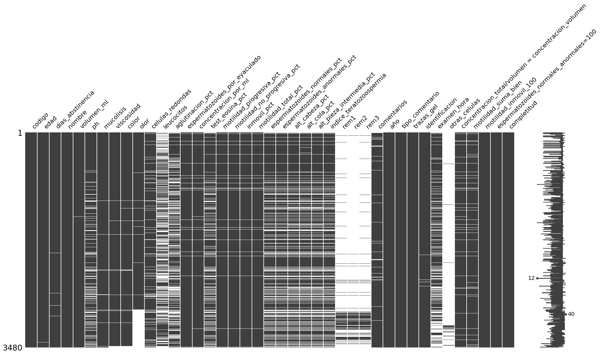
Las variables: color, olor, leucocitos, otras celulas y REM fueron conservadas en la base de datos original, sin embargo, no se incluyeron en el análisis exploratorio.
Color y olor debido a su naturaleza descriptiva, REM y otras celulas debido al alto porcentaje de datos faltantes (88% para las tres categorías REM y 97% para otras celulas)
df = df_completo.drop(columns=['olor','color','leucocitos','rem1','rem2','rem3', 'otras_celulas'])
msno.matrix(df)
<Axes: >
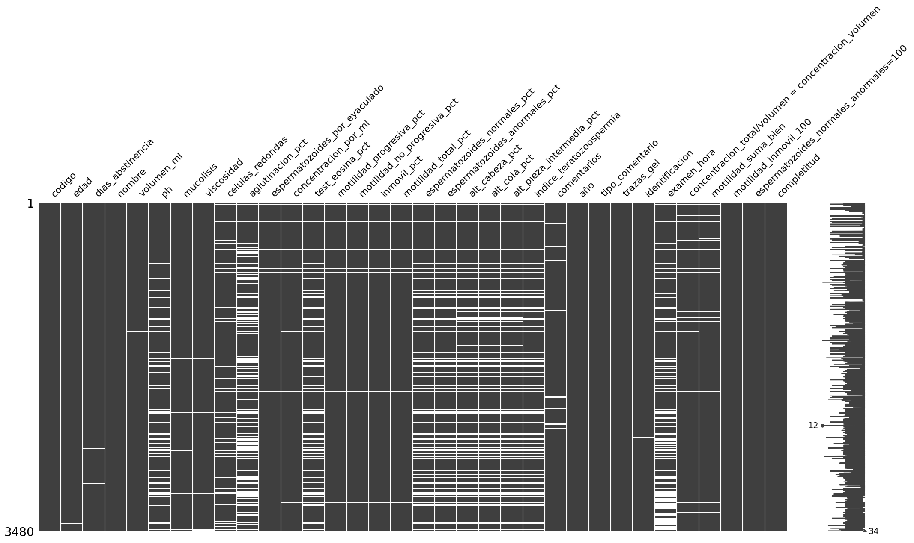
Distribuciones edad y dias_abstinencia#
Para explorar la distribución de las variables edad y días de abstinencia, se utilizaron histogramas con el fin de visualizar cómo se distribuyen los valores observados. Además, se generaron boxplots para ambas variables.
variables = ['edad', 'dias_abstinencia']
fig, axes = plt.subplots(1, 2, figsize=(12, 5))
for ax, var in zip(axes, variables):
sns.histplot(
df[var].dropna(),
bins=20,
kde=True,
ax=ax
)
ax.set_title(f'Distribución {var}')
ax.set_xlabel(var)
plt.tight_layout()
plt.show()
fig, axes = plt.subplots(1, 2, figsize=(12, 5))
for ax, var in zip(axes, variables):
sns.boxplot(
x=df[var],
ax=ax
)
ax.set_title(f'Boxplot {var}')
ax.set_xlabel(var)
plt.tight_layout()
plt.show()
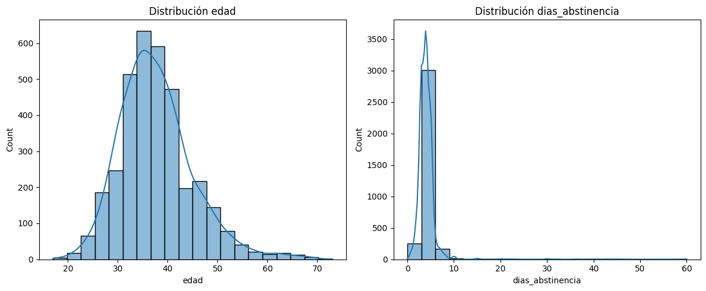
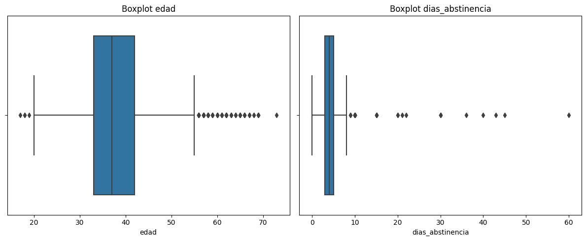
Edad#
df['edad'].describe()
count 3,479.00
mean 37.67
std 7.42
min 17.00
25% 33.00
50% 37.00
75% 42.00
max 73.00
Name: edad, dtype: float64
Podemos observar características descriptivas de la edad, una media de 37 años, el valor mínimo corresponde a 17 años (dado que es un menor de edad sería necesario evaluar su eliminación?), el máximo de 73 años
Días abstinencia#
df['dias_abstinencia'].describe()
count 3,467.00
mean 4.05
std 2.24
min 0.00
25% 3.00
50% 4.00
75% 5.00
max 60.00
Name: dias_abstinencia, dtype: float64
Con respecto a los días de abstinencia podemos observar días con 0, en particular estos registros se deben a pacientes con una segunda muestra recolectada el mismo día, habría que considerar su incorporación al estudio. Por otro lado, la doctora Yeira nos recomendó imputar pacientes con días de abstinencia faltantes con el valor de 3, esto debido a que es el número mínimo de días recomendado por la clínica. En este análisis exploratorio no lo realizamos, ya que se debe considerar.
Outliers - Edad y días abstinencia#
Observamos valores faltantes por medio del método del rango intercuartílico, cabe aclarar que todos los registros corresponden a valores reales, por tanto el IQR solo busca caracterizar estos outliers. Se imprime el código del paciente y el valor correspondiente a la variable, además de los limites superiores e inferiores.
def iqr(col):
df_iqr = df.copy()
df_iqr[col] = pd.to_numeric(df_iqr[col], errors="coerce")
Q1 = df_iqr[col].quantile(0.25)
Q3 = df_iqr[col].quantile(0.75)
IQR = Q3-Q1
limite_inf = Q1 - 1.5 * IQR
limite_sup = Q3 + 1.5 * IQR
outliers = df_iqr[(df_iqr[col] < limite_inf) | (df_iqr[col] > limite_sup)]
print("LIMITE INFERIOR: ", limite_inf, "LIMITE SUPERIOR: ", limite_sup)
return outliers[['codigo',col]].reset_index(drop=True)
print("Outliers edad: ")
iqr('edad')
Outliers edad:
LIMITE INFERIOR: 19.5 LIMITE SUPERIOR: 55.5
| codigo | edad | |
|---|---|---|
| 0 | 17-091 | 57.00 |
| 1 | 17-154 | 63.00 |
| 2 | 17-322 | 57.00 |
| 3 | 17-362 | 56.00 |
| 4 | 18-007 | 63.00 |
| ... | ... | ... |
| 77 | 25-260 | 63.00 |
| 78 | 25-275 | 60.00 |
| 79 | 26-011 | 65.00 |
| 80 | 26-044 | 56.00 |
| 81 | 26-062 | 59.00 |
82 rows × 2 columns
print("Outliers dias abstinencia: ")
iqr('dias_abstinencia')
Outliers dias abstinencia:
LIMITE INFERIOR: 0.0 LIMITE SUPERIOR: 8.0
| codigo | dias_abstinencia | |
|---|---|---|
| 0 | 17-024 | 10.00 |
| 1 | 18-241 | 36.00 |
| 2 | 18-248 | 45.00 |
| 3 | 18-323 | 43.00 |
| 4 | 18-470 | 20.00 |
| 5 | 19-098 | 10.00 |
| 6 | 19-438 | 20.00 |
| 7 | 20-136 | 10.00 |
| 8 | 20-227 | 30.00 |
| 9 | 20-239 | 10.00 |
| 10 | 21-011 | 15.00 |
| 11 | 21-290 | 10.00 |
| 12 | 21-369 | 10.00 |
| 13 | 21-411 | 40.00 |
| 14 | 22-012 | 15.00 |
| 15 | 22-075 | 9.00 |
| 16 | 22-160 | 15.00 |
| 17 | 22-331 | 10.00 |
| 18 | 22-368 | 15.00 |
| 19 | 22-377 | 15.00 |
| 20 | 23-350 | 10.00 |
| 21 | 23-363 | 10.00 |
| 22 | 24-090 | 9.00 |
| 23 | 24-151 | 30.00 |
| 24 | 24-209 | 22.00 |
| 25 | 24-281 | 60.00 |
| 26 | 25-005 | 10.00 |
| 27 | 25-033 | 10.00 |
| 28 | 25-034 | 10.00 |
| 29 | 25-069 | 10.00 |
| 30 | 25-080 | 10.00 |
| 31 | 25-126 | 10.00 |
| 32 | 25-156 | 30.00 |
| 33 | 25-233 | 10.00 |
| 34 | 25-CORTESIA | 10.00 |
| 35 | 26-024 | 21.00 |
Observamos aquellos pacientes con días de abstinencia menores de 3, podemos observar que son 253 registros.
df[df['dias_abstinencia'] < 3 ][['codigo','dias_abstinencia']]
| codigo | dias_abstinencia | |
|---|---|---|
| 21 | 17-022 | 2.00 |
| 39 | 17-040 | 2.00 |
| 118 | 17-124 | 2.00 |
| 123 | 17-130 | 2.00 |
| 125 | 17-132 | 2.00 |
| ... | ... | ... |
| 3441 | 26-050 | 2.00 |
| 3444 | 26-053 | 2.00 |
| 3453 | 26-062 | 1.00 |
| 3465 | 26-074 | 2.00 |
| 3466 | 26-075 | 2.00 |
253 rows × 2 columns
Pacientes con días de abstinencia iguales a 0
df[df['dias_abstinencia'] == 0][['codigo','dias_abstinencia']]
| codigo | dias_abstinencia | |
|---|---|---|
| 1065 | 19-261 | 0.00 |
| 1213 | 19-414 | 0.00 |
| 2499 | 23-181 | 0.00 |
Distribuciones volumen, ph, celulas redondas y aglutinación#
variables = {
'volumen_ml': 'Volumen (mL)',
'ph': 'pH',
'celulas_redondas': 'Células redondas',
'aglutinacion_pct': 'Aglutinación (%)'
}
for var, nombre in variables.items():
datos = pd.to_numeric(df[var], errors='coerce')
fig, axes = plt.subplots(1, 2, figsize=(12, 4))
sns.histplot(
datos,
bins=20,
kde=True,
ax=axes[0]
)
sns.boxplot(
x=datos,
ax=axes[1]
)
axes[0].set_title(f'Distribución {nombre}')
axes[1].set_title(f'Boxplot {nombre}')
plt.tight_layout()
plt.show()
print(f'\nResumen descriptivo: {nombre}')
print(datos.describe())
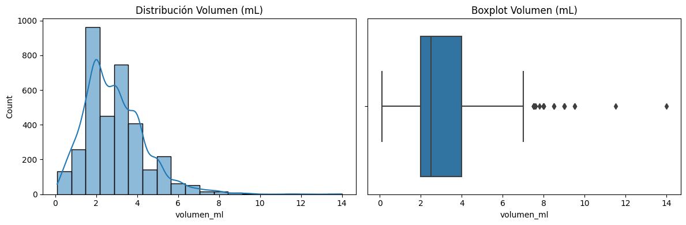
Resumen descriptivo: Volumen (mL)
count 3,474.00
mean 2.89
std 1.48
min 0.10
25% 2.00
50% 2.50
75% 4.00
max 14.00
Name: volumen_ml, dtype: float64
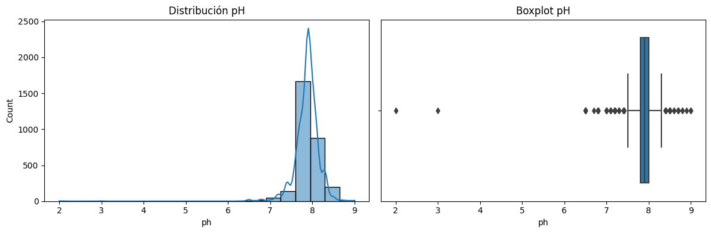
Resumen descriptivo: pH
count 2,966.00
mean 7.88
std 0.29
min 2.00
25% 7.80
50% 7.90
75% 8.00
max 9.00
Name: ph, dtype: float64
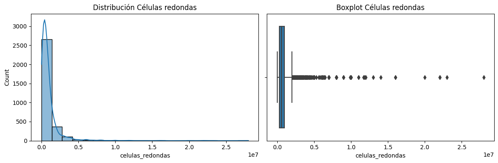
Resumen descriptivo: Células redondas
count 3,215.00
mean 945,293.31
std 1,561,959.30
min 0.00
25% 300,000.00
50% 600,000.00
75% 1,000,000.00
max 28,000,000.00
Name: celulas_redondas, dtype: float64
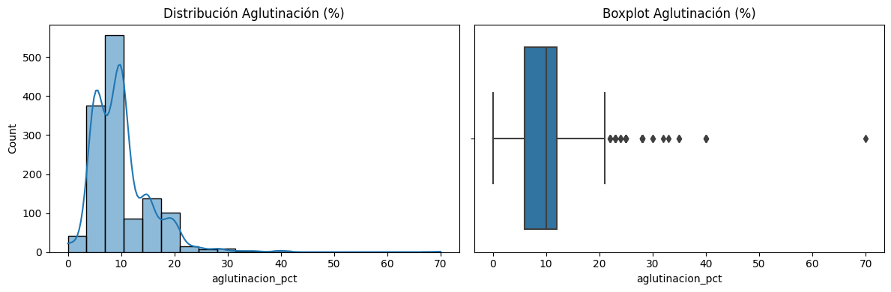
Resumen descriptivo: Aglutinación (%)
count 1,335.00
mean 9.93
std 5.49
min 0.00
25% 6.00
50% 10.00
75% 12.00
max 70.00
Name: aglutinacion_pct, dtype: float64
Valores de referencia para las variables en los formatos espermograma:#
Volumen: 2-6 mL (Formato 2017) | >= 1,4 mL (Formato 2026)
pH: >= 7,2 (Formato 2017) | 7,2 - 8 (Formato 2026)
Celulas redondas: Hasta 10^6/ml (Formato 2017) | Hasta 10^6/ml (Formato 2026)
Aglutinación (%): No cuenta con valores de referencia
Anotaciones:
Para la variable aglutinación habría que evaluar registros sin aglutinación (Sería correcto reemplazar con 0? - Valores faltantes es igual a 0? o no se realizó esa prueba)
3 registros de celulas redondas cuentan con el valor “ESCASAS”
df[df['celulas_redondas'] == "ESCASAS"][['codigo','celulas_redondas']]
| codigo | celulas_redondas | |
|---|---|---|
| 433 | 18-077 | ESCASAS |
| 434 | 18-078 | ESCASAS |
| 620 | 18-281 | ESCASAS |
Número pacientes sin aglutinación#
Algunos pacientes están digitados con 0 y otros como “SIN AGLUTINACIÓN”. En total son 1040 pacientes.
df[df['aglutinacion_pct'] == "SIN AGLUTINACION"][['codigo','aglutinacion_pct']]
| codigo | aglutinacion_pct | |
|---|---|---|
| 3 | 17-004 | SIN AGLUTINACION |
| 4 | 17-005 | SIN AGLUTINACION |
| 16 | 17-017 | SIN AGLUTINACION |
| 21 | 17-022 | SIN AGLUTINACION |
| 38 | 17-039 | SIN AGLUTINACION |
| ... | ... | ... |
| 3464 | 26-073 | SIN AGLUTINACION |
| 3466 | 26-075 | SIN AGLUTINACION |
| 3467 | 26-076 | SIN AGLUTINACION |
| 3477 | 26-086 | SIN AGLUTINACION |
| 3478 | 26-087 | SIN AGLUTINACION |
1022 rows × 2 columns
df[df['aglutinacion_pct'].astype(str) == "0"][['codigo','aglutinacion_pct']]
| codigo | aglutinacion_pct | |
|---|---|---|
| 129 | 17-138 | 0 |
| 287 | 17-323 | 0 |
| 334 | 17-378 | 0 |
| 338 | 17-382 | 0 |
| 339 | 17-384 | 0 |
| 341 | 17-386 | 0 |
| 342 | 17-387 | 0 |
| 486 | 18-137 | 0 |
| 597 | 18-255 | 0 |
| 598 | 18-256 | 0 |
| 688 | 18-352 | 0 |
| 770 | 18-437 | 0 |
| 771 | 18-438 | 0 |
| 1202 | 19-403 | 0 |
| 2243 | 22-333 | 0 |
| 2453 | 23-134 | 0 |
| 2720 | 24-033 | 0 |
| 3383 | 25-358 | 0 |
Outliers - volumen, ph, celulas redondas y aglutinación#
Observamos outliers por medio de IQR, imprimimos límite superior o inferior (solo con el fin de caracterizarlos)
print("Outliers volumen: ")
iqr('volumen_ml')
Outliers volumen:
LIMITE INFERIOR: -1.0 LIMITE SUPERIOR: 7.0
| codigo | volumen_ml | |
|---|---|---|
| 0 | 17-006 | 8.50 |
| 1 | 17-018 | 8.00 |
| 2 | 17-236 | 7.80 |
| 3 | 17-379 | 8.00 |
| 4 | 18-121 | 7.50 |
| 5 | 18-249 | 9.00 |
| 6 | 18-352 | 7.50 |
| 7 | 18-425 | 8.50 |
| 8 | 19-143 | 8.00 |
| 9 | 19-159 | 8.00 |
| 10 | 19-245 | 9.50 |
| 11 | 19-277 | 9.00 |
| 12 | 19-287 | 7.50 |
| 13 | 19-288 | 7.60 |
| 14 | 19-300 | 7.50 |
| 15 | 19-320 | 8.00 |
| 16 | 19-450 | 7.50 |
| 17 | 20-138 | 7.50 |
| 18 | 20-187 | 7.50 |
| 19 | 20-202 | 7.50 |
| 20 | 20-204 | 8.50 |
| 21 | 20-312 | 7.50 |
| 22 | 21-075 | 8.00 |
| 23 | 21-113 | 8.00 |
| 24 | 21-121 | 7.50 |
| 25 | 21-142 | 7.50 |
| 26 | 21-301 | 8.00 |
| 27 | 21-331 | 9.50 |
| 28 | 21-334 | 7.50 |
| 29 | 21-395 | 8.00 |
| 30 | 21-420 | 8.00 |
| 31 | 22-252 | 14.00 |
| 32 | 22-265 | 7.60 |
| 33 | 22-318 | 7.50 |
| 34 | 22-379 | 9.00 |
| 35 | 23-036 | 9.00 |
| 36 | 23-132 | 11.50 |
| 37 | 23-341 | 9.00 |
| 38 | 23-345 | 8.00 |
| 39 | 24-002 | 8.00 |
| 40 | 24-060 | 9.50 |
| 41 | 25-240 | 8.00 |
| 42 | 25-256 | 7.50 |
print("Outliers ph: ")
iqr('ph')
Outliers ph:
LIMITE INFERIOR: 7.5 LIMITE SUPERIOR: 8.3
| codigo | ph | |
|---|---|---|
| 0 | 17-003 | 6.80 |
| 1 | 17-016 | 7.00 |
| 2 | 17-040 | 7.40 |
| 3 | 17-049 | 7.40 |
| 4 | 17-050 | 7.40 |
| ... | ... | ... |
| 227 | 25-CORTESIA | 7.40 |
| 228 | 26-015 | 6.80 |
| 229 | 26-080 | 7.40 |
| 230 | 26-082 | 7.20 |
| 231 | 26-083 | 7.40 |
232 rows × 2 columns
print("Outliers celulas redondas: ")
iqr('celulas_redondas')
Outliers celulas redondas:
LIMITE INFERIOR: -750000.0 LIMITE SUPERIOR: 2050000.0
| codigo | celulas_redondas | |
|---|---|---|
| 0 | 17-019 | 4,000,000.00 |
| 1 | 17-023 | 3,800,000.00 |
| 2 | 17-062 | 2,200,000.00 |
| 3 | 17-065 | 3,000,000.00 |
| 4 | 17-075 | 5,800,000.00 |
| ... | ... | ... |
| 249 | 25-350 | 2,800,000.00 |
| 250 | 25-365 | 3,100,000.00 |
| 251 | 26-027 | 2,500,000.00 |
| 252 | 26-083 | 2,800,000.00 |
| 253 | CORTESIA | 4,000,000.00 |
254 rows × 2 columns
print("Outliers aglutinación: ")
iqr('aglutinacion_pct')
Outliers aglutinación:
LIMITE INFERIOR: -3.0 LIMITE SUPERIOR: 21.0
| codigo | aglutinacion_pct | |
|---|---|---|
| 0 | 17-185 | 22.00 |
| 1 | 17-201 | 24.00 |
| 2 | 18-047 | 25.00 |
| 3 | 18-083 | 23.00 |
| 4 | 18-143 | 28.00 |
| 5 | 18-243 | 35.00 |
| 6 | 18-371 | 32.00 |
| 7 | 19-002 | 40.00 |
| 8 | 19-015 | 40.00 |
| 9 | 19-031 | 70.00 |
| 10 | 19-057 | 23.00 |
| 11 | 20-001 | 40.00 |
| 12 | 20-072 | 25.00 |
| 13 | 20-139 | 28.00 |
| 14 | 21-049 | 28.00 |
| 15 | 21-082 | 28.00 |
| 16 | 21-131 | 28.00 |
| 17 | 21-134 | 30.00 |
| 18 | 21-140 | 25.00 |
| 19 | 21-174 | 25.00 |
| 20 | 22-039 | 35.00 |
| 21 | 22-168 | 23.00 |
| 22 | 22-185 | 24.00 |
| 23 | 22-187 | 23.00 |
| 24 | 22-192 | 33.00 |
| 25 | 22-216 | 25.00 |
| 26 | 22-243 | 22.00 |
| 27 | 23-131 | 28.00 |
| 28 | 24-026 | 25.00 |
| 29 | 24-174 | 22.00 |
| 30 | 24-185 | 23.00 |
| 31 | 25-043 | 30.00 |
| 32 | 25-050 | 28.00 |
| 33 | 25-136 | 23.00 |
Distribuciones - Total espermatozoides por eyaculado y concentración/ml#
variables = {
'espermatozoides_por_eyaculado': 'Total espermatozoides',
'concentracion_por_ml': 'Concentración espermatozoides por mL'
}
for var, nombre in variables.items():
datos = pd.to_numeric(df[var], errors='coerce')
fig, axes = plt.subplots(1, 2, figsize=(12, 4))
sns.histplot(
datos,
bins=20,
kde=True,
ax=axes[0]
)
sns.boxplot(
x=datos,
ax=axes[1]
)
axes[0].set_title(f'Distribución {nombre}')
axes[1].set_title(f'Boxplot {nombre}')
plt.tight_layout()
plt.show()
print(f'\nResumen descriptivo: {nombre}')
print(datos.describe())
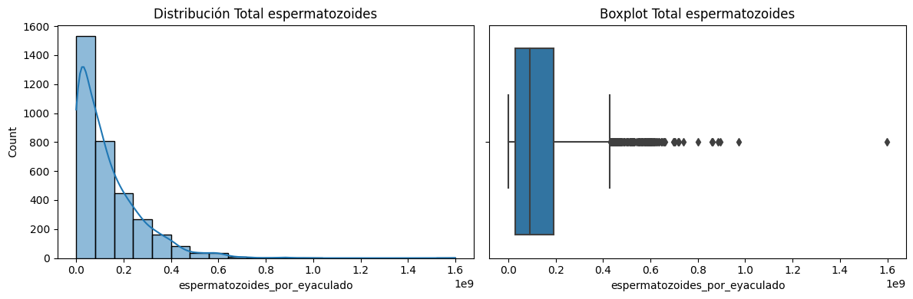
Resumen descriptivo: Total espermatozoides
count 3,379.00
mean 131,738,947.03
std 134,864,877.19
min 0.00
25% 30,950,000.00
50% 92,000,000.00
75% 190,400,000.00
max 1,599,000,000.00
Name: espermatozoides_por_eyaculado, dtype: float64
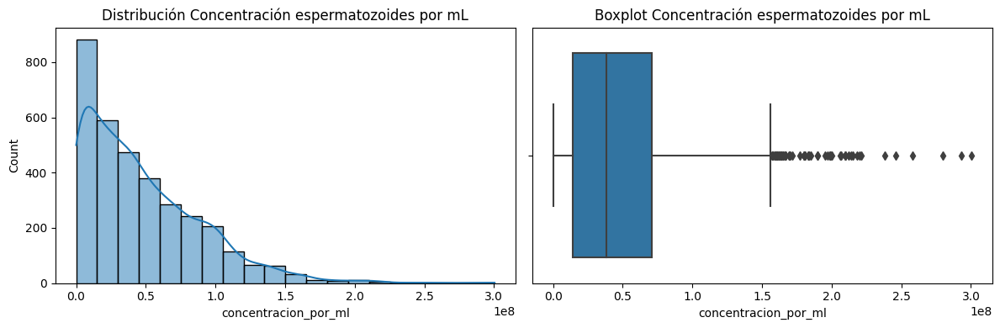
Resumen descriptivo: Concentración espermatozoides por mL
count 3,376.00
mean 47,485,596.86
std 42,014,247.34
min 0.00
25% 14,000,000.00
50% 38,000,000.00
75% 71,000,000.00
max 300,400,000.00
Name: concentracion_por_ml, dtype: float64
Valores de referencia para las variables en los formatos espermograma:#
Total eyaculado: Percentil 2.5: 23 - Percentil 5: 39 - Límite de referencia 33-46 (Formato 2017) | Límite de decisión >= 39 (Formato 2026)
Concentración por mL: Percentil 2.5: 9 - Percentil 5: 15 - Límite de referencia 12-16 (Formato 2017) | Límite de decisión >= 16 (Formato 2026)
Verificación de que la concentración corresponda al total / mL#
Para la verificacion de los valores se utilizó la columna auxiliar “concentracion_total/volumen = concentracion_volumen”
df['concentracion_total/volumen = concentracion_volumen'].value_counts()
concentracion_total/volumen = concentracion_volumen
OK 3302
Name: count, dtype: int64
Los registros clasificados como OK corresponden a aquellos en los que la concentración por mL es equivalente al número total de espermatozoides entre el volumen de la muestra. Debido a posibles errores de redondeo, se estableció un umbral de tolerancia del 5% para distinguir las inconsistencias reales.
Las diferencias observadas entre el número de registros clasificados como OK y los conteos totales de las variables espermatozoides_por_eyaculado y concentracion_ml se deben a la presencia de registros con valores faltantes, los cuales no son considerados en los conteos.
Distribuciones - Eosina, morfología, motilidad, y alteraciones#
variables = {
'test_eosina_pct': 'Test de eosina (%)',
'motilidad_progresiva_pct': 'Motilidad progresiva (%)',
'motilidad_no_progresiva_pct': 'Motilidad no progresiva (%)',
'inmovil_pct': 'Espermatozoides inmóviles (%)',
'motilidad_total_pct': 'Motilidad total (%)',
'espermatozoides_normales_pct': 'Espermatozoides normales (%)',
'espermatozoides_anormales_pct': 'Espermatozoides anormales (%)',
'alt_cabeza_pct': 'Alteraciones de cabeza (%)',
'alt_cola_pct': 'Alteraciones de cola (%)',
'alt_pieza_intermedia_pct': 'Alteraciones de pieza intermedia (%)',
'indice_teratozoospermia': 'Índice de teratozoospermia'
}
for var, nombre in variables.items():
fig, axes = plt.subplots(1, 2, figsize=(12, 4))
sns.histplot(
df[var].dropna(),
bins=20,
kde=True,
ax=axes[0]
)
axes[0].set_title(f'Distribución de {nombre}')
axes[0].set_xlabel(nombre)
sns.boxplot(
x=df[var],
ax=axes[1]
)
axes[1].set_title(f'Boxplot de {nombre}')
axes[1].set_xlabel(nombre)
plt.tight_layout()
plt.show()
print(f'\nResumen descriptivo: {nombre}')
display(df[var].describe())
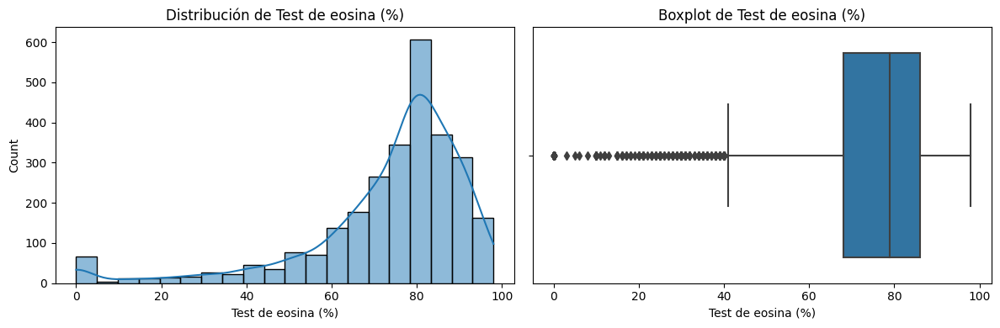
Resumen descriptivo: Test de eosina (%)
count 2,779.00
mean 73.47
std 19.41
min 0.00
25% 68.00
50% 79.00
75% 86.00
max 98.00
Name: test_eosina_pct, dtype: float64
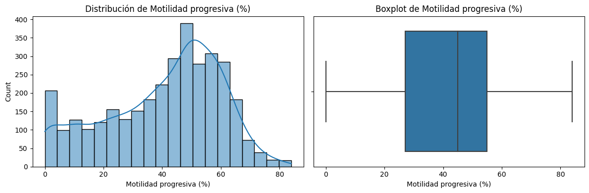
Resumen descriptivo: Motilidad progresiva (%)
count 3,377.00
mean 40.50
std 19.53
min 0.00
25% 27.00
50% 45.00
75% 55.00
max 84.00
Name: motilidad_progresiva_pct, dtype: float64
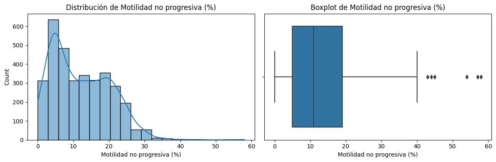
Resumen descriptivo: Motilidad no progresiva (%)
count 3,376.00
mean 12.12
std 8.23
min 0.00
25% 5.00
50% 11.00
75% 19.00
max 58.00
Name: motilidad_no_progresiva_pct, dtype: float64
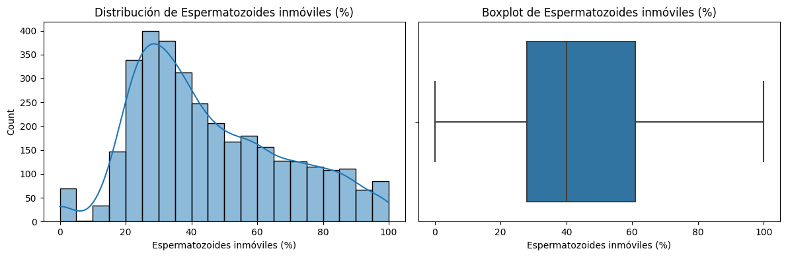
Resumen descriptivo: Espermatozoides inmóviles (%)
count 3,375.00
mean 45.26
std 22.86
min 0.00
25% 28.00
50% 40.00
75% 61.00
max 100.00
Name: inmovil_pct, dtype: float64
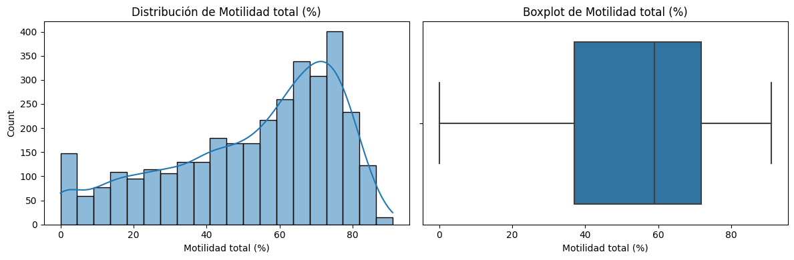
Resumen descriptivo: Motilidad total (%)
count 3,378.00
mean 52.60
std 23.24
min 0.00
25% 37.00
50% 59.00
75% 71.75
max 91.00
Name: motilidad_total_pct, dtype: float64
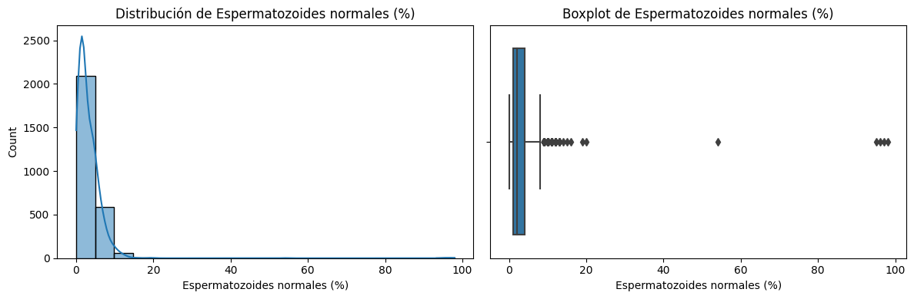
Resumen descriptivo: Espermatozoides normales (%)
count 2,744.00
mean 3.15
std 4.47
min 0.00
25% 1.00
50% 2.00
75% 4.00
max 98.00
Name: espermatozoides_normales_pct, dtype: float64
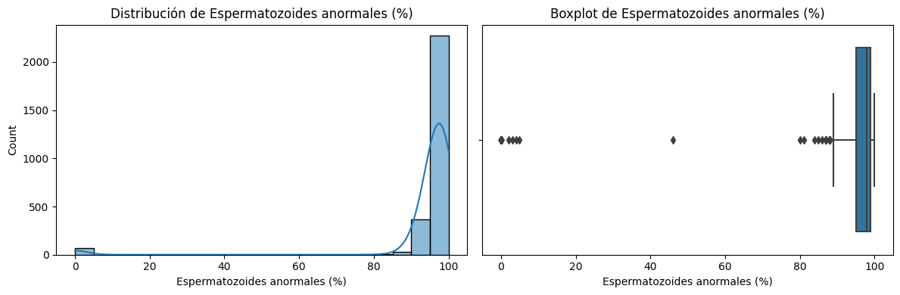
Resumen descriptivo: Espermatozoides anormales (%)
count 2,744.00
mean 94.44
std 15.48
min 0.00
25% 95.00
50% 98.00
75% 99.00
max 100.00
Name: espermatozoides_anormales_pct, dtype: float64
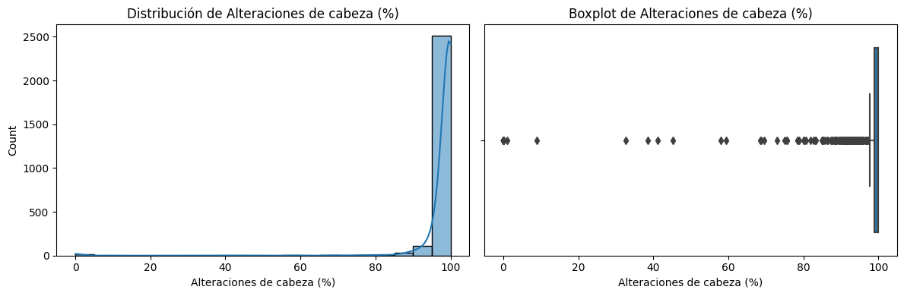
Resumen descriptivo: Alteraciones de cabeza (%)
count 2,690.00
mean 98.12
std 8.82
min 0.00
25% 98.94
50% 100.00
75% 100.00
max 100.00
Name: alt_cabeza_pct, dtype: float64
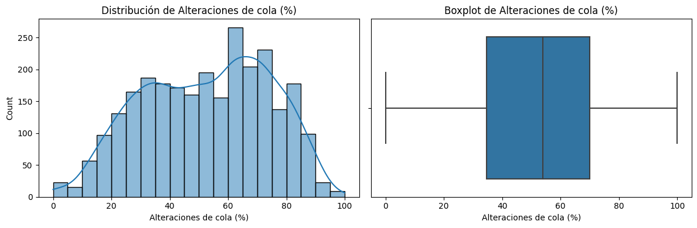
Resumen descriptivo: Alteraciones de cola (%)
count 2,682.00
mean 52.50
std 21.62
min 0.00
25% 34.73
50% 54.00
75% 70.10
max 100.00
Name: alt_cola_pct, dtype: float64
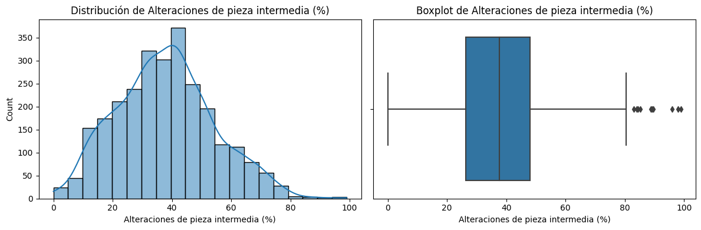
Resumen descriptivo: Alteraciones de pieza intermedia (%)
count 2,690.00
mean 37.82
std 16.44
min 0.00
25% 26.27
50% 37.75
75% 48.00
max 99.00
Name: alt_pieza_intermedia_pct, dtype: float64
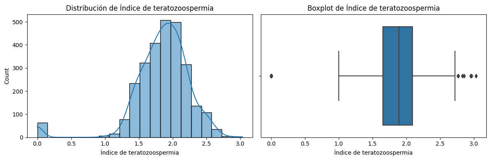
Resumen descriptivo: Índice de teratozoospermia
count 2,735.00
mean 1.85
std 0.42
min 0.00
25% 1.65
50% 1.89
75% 2.09
max 3.03
Name: indice_teratozoospermia, dtype: float64
Valores de referencia para las variables en los formatos espermograma:#
Test eosina: Percentil 2.5: 53 - Percentil 5: 58 - Límite de referencia: 55-63 (Formato 2017) | Límite de decisión >= 54 (Formato 2026)
Motilidad progresiva: Percentil 2.5: 28 - Percentil 5: 32 - Límite de referencia: 31-34 (Formato 2017) | Límite de decisión >= 30 (Formato 2026)
Motilidad no progresiva: No cuenta con valores de referencia
Inmovil: No cuenta con valores de referencia
Motilidad total: Percentil 2.5: 34 - Percentil 5: 40 - Límite de referencia: 38-42 (Formato 2017) | Esta variable no se registra en el formato, para estos registros se calcula como (motilidad progresiva + motilidad no progresiva), siguiendo el formato de 2017 (Formato 2026)
Espermatozoides normales: Percentil 2.5: 3 - Percentil 5: 4 - Límite de referencia: 3-4 (Formato 2017) | Límite de decisión >= 4 (Formato 2026)
Espermatozoides anormales: No cuenta con valores de referencia
Índice teratozoospermia:No cuenta con valores de referencia
Alteraciones en cola %:No cuenta con valores de referencia
Alteraciones en pieza intermedia %*:No cuenta con valores de referencia
Alteraciones en cabeza:No cuenta con valores de referencia
Observaciones:#
motilidad total = motilidad progresiva + motilidad no progresiva
100 = motilidad progresiva + motilidad no progresiva + inmovil
100 = espermatozoides anormales + espermatoizoides normales
Para la verificación de esto se crearon las columnas auxiliares:
motilidad_suma_bien: utiliza un umbral del 2% para verificar que la suma de motilidad progresiva y motilidad no progresiva corresponde a motilidad total
motilidad_inmovil_100: utiliza un umbral del 2% para verficar que la suma de motilidad progresiva, motilidad no progresiva en inmovil es equivalente a 100
espermatozoides_normales_anormales=100: se verifica que la suma sea exáctamente 100 entre las dos columnas
df['motilidad_suma_bien'].value_counts()
motilidad_suma_bien
OK 3276
Name: count, dtype: int64
df['motilidad_inmovil_100'].value_counts()
motilidad_inmovil_100
OK 3304
Revisar 176
Name: count, dtype: int64
df[df['motilidad_inmovil_100'] == 'Revisar'][['codigo','motilidad_progresiva_pct', 'motilidad_no_progresiva_pct', 'inmovil_pct', 'motilidad_inmovil_100']]
| codigo | motilidad_progresiva_pct | motilidad_no_progresiva_pct | inmovil_pct | motilidad_inmovil_100 | |
|---|---|---|---|---|---|
| 5 | 17-006 | NaN | NaN | NaN | Revisar |
| 20 | 17-021 | NaN | NaN | NaN | Revisar |
| 46 | 17-047 | 0.00 | 0.00 | 0.00 | Revisar |
| 55 | 17-057 | NaN | NaN | NaN | Revisar |
| 69 | 17-071 | NaN | NaN | NaN | Revisar |
| ... | ... | ... | ... | ... | ... |
| 3417 | 26-023 | NaN | NaN | NaN | Revisar |
| 3435 | 26-044 | 0.00 | 0.00 | 0.00 | Revisar |
| 3443 | 26-052 | NaN | NaN | NaN | Revisar |
| 3444 | 26-053 | NaN | NaN | NaN | Revisar |
| 3473 | 26-082 | NaN | NaN | NaN | Revisar |
176 rows × 5 columns
df['espermatozoides_normales_anormales=100'].value_counts()
espermatozoides_normales_anormales=100
OK 2678
Revisar 802
Name: count, dtype: int64
df[df['espermatozoides_normales_anormales=100'] == 'Revisar'][['codigo','espermatozoides_normales_pct', 'espermatozoides_anormales_pct', 'espermatozoides_normales_anormales=100']]
| codigo | espermatozoides_normales_pct | espermatozoides_anormales_pct | espermatozoides_normales_anormales=100 | |
|---|---|---|---|---|
| 2 | 17-003 | NaN | NaN | Revisar |
| 5 | 17-006 | NaN | NaN | Revisar |
| 6 | 17-007 | NaN | NaN | Revisar |
| 7 | 17-008 | NaN | NaN | Revisar |
| 9 | 17-010 | NaN | NaN | Revisar |
| ... | ... | ... | ... | ... |
| 3463 | 26-072 | NaN | NaN | Revisar |
| 3464 | 26-073 | NaN | NaN | Revisar |
| 3465 | 26-074 | NaN | NaN | Revisar |
| 3469 | 26-078 | NaN | NaN | Revisar |
| 3473 | 26-082 | NaN | NaN | Revisar |
802 rows × 4 columns
Los registros que se encuentran como “REVISAR” se debe a registros de pacientes azoospermicos con valores de 0 o pacientes donde no se realizó la debida prueba en las variables utilizadas para la validación. Es necesario evaluar cómo proceder con estos registros, se deberían incluir en el análisis?
Outliers por IQR:#
Outliers por rango intercuartílico con límite superior e inferior.
from IPython.display import display
for var in variables:
print(f"\nOutliers {var}:")
outliers_df = iqr(var)
display(outliers_df)
Outliers test_eosina_pct:
LIMITE INFERIOR: 41.0 LIMITE SUPERIOR: 113.0
| codigo | test_eosina_pct | |
|---|---|---|
| 0 | 17-047 | 0.00 |
| 1 | 17-094 | 0.00 |
| 2 | 17-097 | 0.00 |
| 3 | 17-148 | 0.00 |
| 4 | 17-185 (190) | 21.00 |
| ... | ... | ... |
| 187 | 26-009 | 37.00 |
| 188 | 26-011 | 40.00 |
| 189 | 26-044 | 0.00 |
| 190 | 26-060 | 12.00 |
| 191 | 26-062 | 27.00 |
192 rows × 2 columns
Outliers motilidad_progresiva_pct:
LIMITE INFERIOR: -15.0 LIMITE SUPERIOR: 97.0
| codigo | motilidad_progresiva_pct |
|---|
Outliers motilidad_no_progresiva_pct:
LIMITE INFERIOR: -16.0 LIMITE SUPERIOR: 40.0
| codigo | motilidad_no_progresiva_pct | |
|---|---|---|
| 0 | 17-245 | 58.00 |
| 1 | 18-026 | 44.00 |
| 2 | 20-118 | 45.00 |
| 3 | 22-069 | 54.00 |
| 4 | 23-056 | 57.00 |
| 5 | 24-247 | 43.00 |
Outliers inmovil_pct:
LIMITE INFERIOR: -21.5 LIMITE SUPERIOR: 110.5
| codigo | inmovil_pct |
|---|
Outliers motilidad_total_pct:
LIMITE INFERIOR: -15.125 LIMITE SUPERIOR: 123.875
| codigo | motilidad_total_pct |
|---|
Outliers espermatozoides_normales_pct:
LIMITE INFERIOR: -3.5 LIMITE SUPERIOR: 8.5
| codigo | espermatozoides_normales_pct | |
|---|---|---|
| 0 | 17-026 | 10.00 |
| 1 | 17-045 | 9.00 |
| 2 | 17-069 | 12.00 |
| 3 | 17-084 | 12.00 |
| 4 | 17-084 | 12.00 |
| ... | ... | ... |
| 98 | 24-136 | 9.00 |
| 99 | 24-349 | 10.00 |
| 100 | 24-376 | 9.00 |
| 101 | 25-314 | 10.00 |
| 102 | 25-348 | 10.00 |
103 rows × 2 columns
Outliers espermatozoides_anormales_pct:
LIMITE INFERIOR: 89.0 LIMITE SUPERIOR: 105.0
| codigo | espermatozoides_anormales_pct | |
|---|---|---|
| 0 | 17-047 | 0.00 |
| 1 | 17-069 | 88.00 |
| 2 | 17-084 | 88.00 |
| 3 | 17-084 | 88.00 |
| 4 | 17-084 | 88.00 |
| ... | ... | ... |
| 87 | 25-165 | 0.00 |
| 88 | 25-253 | 0.00 |
| 89 | 25-272 | 0.00 |
| 90 | 25-330 | 0.00 |
| 91 | 26-044 | 0.00 |
92 rows × 2 columns
Outliers alt_cabeza_pct:
LIMITE INFERIOR: 97.35 LIMITE SUPERIOR: 101.59
| codigo | alt_cabeza_pct | |
|---|---|---|
| 0 | 17-016 | 96.90 |
| 1 | 17-078 | 94.79 |
| 2 | 17-094 | 0.00 |
| 3 | 17-148 | 0.00 |
| 4 | 17-198 | 69.47 |
| ... | ... | ... |
| 356 | 26-022 | 91.20 |
| 357 | 26-024 | 97.02 |
| 358 | 26-044 | 0.00 |
| 359 | 26-063 | 95.91 |
| 360 | 26-076 | 94.73 |
361 rows × 2 columns
Outliers alt_cola_pct:
LIMITE INFERIOR: -18.324999999999996 LIMITE SUPERIOR: 123.15499999999999
| codigo | alt_cola_pct |
|---|
Outliers alt_pieza_intermedia_pct:
LIMITE INFERIOR: -6.318750000000001 LIMITE SUPERIOR: 80.59125
| codigo | alt_pieza_intermedia_pct | |
|---|---|---|
| 0 | 18-116 | 95.90 |
| 1 | 18-282 | 89.58 |
| 2 | 19-360 | 84.00 |
| 3 | 21-396 | 89.17 |
| 4 | 22-057 | 98.00 |
| 5 | 22-117 | 83.00 |
| 6 | 22-406 | 84.44 |
| 7 | 23-055 | 85.26 |
| 8 | 24-192 | 99.00 |
| 9 | 25-247 | 88.88 |
Outliers indice_teratozoospermia:
LIMITE INFERIOR: 0.99 LIMITE SUPERIOR: 2.75
| codigo | indice_teratozoospermia | |
|---|---|---|
| 0 | 17-094 | 0.00 |
| 1 | 17-097 | 0.00 |
| 2 | 17-148 | 0.00 |
| 3 | 18-038 | 0.00 |
| 4 | 18-095 | 2.77 |
| ... | ... | ... |
| 66 | 25-165 | 0.00 |
| 67 | 25-253 | 0.00 |
| 68 | 25-272 | 0.00 |
| 69 | 25-330 | 0.00 |
| 70 | 26-044 | 0.00 |
71 rows × 2 columns
Distribución variables categóricas - Bacterias, mucólisis, trazas de gel y viscosidad#
Bacterias#
df['examen_hora'].value_counts()
examen_hora
BACTERIAS + 911
ESCASAS 745
BACTERIAS ++ 695
BACTERIAS +++ 152
BACTERIAS ++++ 9
BACTERIAS 4
BACTERIAS = 2000000 1
Name: count, dtype: int64
Visualizamos aquellos registros poco comunes:
df[(df['examen_hora'] == "BACTERIAS") | (df['examen_hora'] == "BACTERIAS = 2000000") | (df['examen_hora'] == "BACTERIAS ++++")][['codigo','examen_hora']]
| codigo | examen_hora | |
|---|---|---|
| 101 | 17-100 | BACTERIAS |
| 165 | 17-182 | BACTERIAS ++++ |
| 169 | 17-185 (190) | BACTERIAS ++++ |
| 359 | 17-412 | BACTERIAS ++++ |
| 970 | 19-166 | BACTERIAS |
| 981 | 19-177 | BACTERIAS ++++ |
| 1042 | 19-238 | BACTERIAS ++++ |
| 1094 | 19-292 | BACTERIAS ++++ |
| 1375 | 20-113 | BACTERIAS ++++ |
| 1472 | 20-212 | BACTERIAS ++++ |
| 1739 | 21-167 | BACTERIAS ++++ |
| 2218 | 22-304 | BACTERIAS = 2000000 |
| 2280 | 22-373 | BACTERIAS |
| 2443 | 23-124 | BACTERIAS |
plt.figure(figsize=(8, 4))
sns.countplot(
data=df,
x='examen_hora'
)
plt.title('Distribución de bacterias')
plt.xlabel('bacterias')
plt.ylabel('Frecuencia')
plt.xticks(rotation=45)
plt.tight_layout()
plt.show()
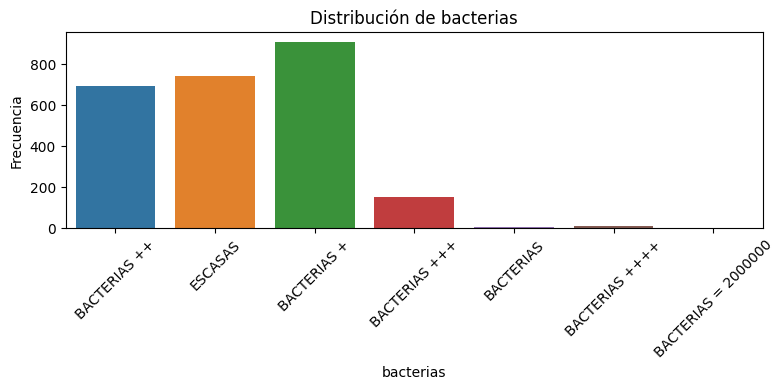
Mucólisis#
La variable de mucólisis cuenta con un valor de referencia: (Antes de 60)
df['mucolisis'].value_counts()
mucolisis
COMPLETA 2348
INCOMPLETA 1097
Name: count, dtype: int64
plt.figure(figsize=(8, 4))
sns.countplot(
data=df,
x='mucolisis'
)
plt.title('Distribución de mucolisis')
plt.xlabel('mucolisis')
plt.ylabel('Frecuencia')
plt.xticks(rotation=45)
plt.tight_layout()
plt.show()
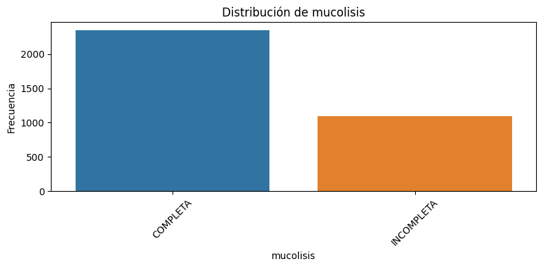
Trazas de gel#
df['trazas_gel'].value_counts()
trazas_gel
NO 3389
SI 91
Name: count, dtype: int64
plt.figure(figsize=(8, 4))
sns.countplot(
data=df,
x='trazas_gel'
)
plt.title('Distribución de trazas de gel')
plt.xlabel(' trazas de gel')
plt.ylabel('Frecuencia')
plt.xticks(rotation=45)
plt.tight_layout()
plt.show()
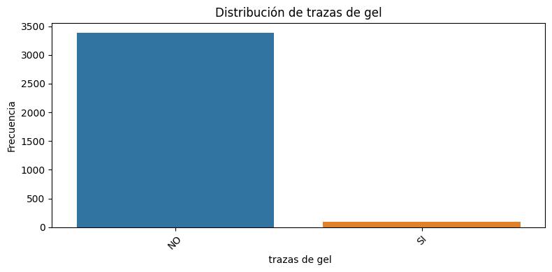
Viscosidad#
df['viscosidad'].value_counts()
viscosidad
NORMAL 2189
AUMENTADA 905
LIGERAMENTE AUMENTADA 333
MUY AUMENTADA 2
Name: count, dtype: int64
plt.figure(figsize=(8, 4))
sns.countplot(
data=df,
x='viscosidad'
)
plt.title('Distribución de viscosidad')
plt.xlabel('viscosidad')
plt.ylabel('Frecuencia')
plt.xticks(rotation=45)
plt.tight_layout()
plt.show()
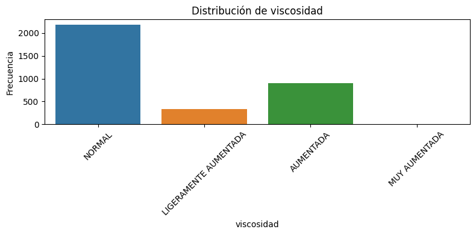
df[(df['viscosidad'] == "MUY AUMENTADA")][['codigo','viscosidad']]
| codigo | viscosidad | |
|---|---|---|
| 1721 | 21-149 | MUY AUMENTADA |
| 1844 | 21-310 | MUY AUMENTADA |
Multivariado#
Matriz correlación#
Con el fin de explorar las relaciones entre las variables numéricas, se realizó una matriz de correlación utilizando el coeficiente de Spearman. Este método fue seleccionado debido a que varias de las variables presentan distribuciones asimétricas y valores extremos. Posteriormente realizamos un análisis más detallado que comprende la relación entre las variables de Años y Edad, con el resto de variables del espermograma.
df_num = (
df.select_dtypes(include=['number'])
.drop(columns=['completitud', 'año'])
)
corr = df_num.corr(method='spearman')
mask = np.triu(np.ones_like(corr, dtype=bool))
plt.figure(figsize=(12, 10))
sns.heatmap(
corr,
mask=mask,
annot=True,
fmt='.2f',
cmap='coolwarm',
center=0,
vmin=-1,
vmax=1,
square=True,
linewidths=0.5,
cbar_kws={'shrink': 0.8}
)
plt.title('Matriz de correlación (Spearman)', fontsize=14)
plt.tight_layout()
plt.show()
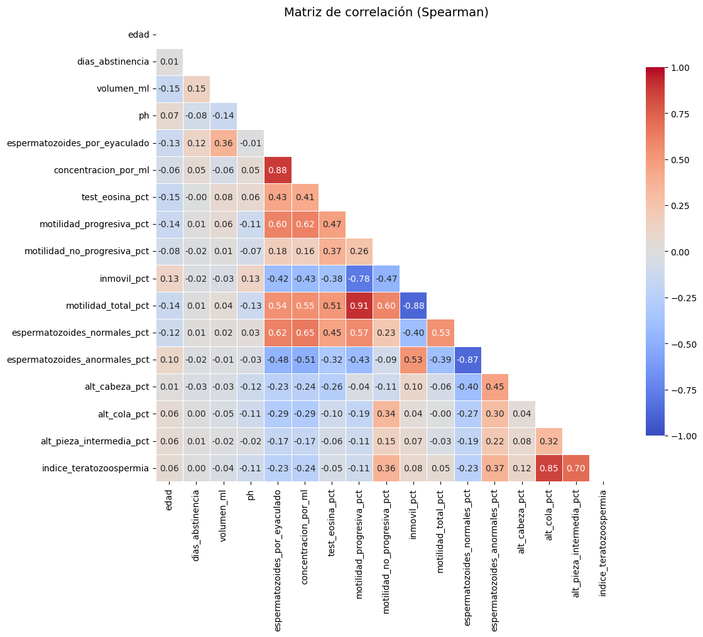
Bivariado - Año#
Evaluamos la relación entre los distintos parámetros seminales y el año de realización del examen. Con el fin de identificar posibles cambios en la distribución de las variables a lo largo del periodo de tiempo estudiado.
Edad por año - Normalidad, igualdad de varianzas, diferencias entre grupos (kruskall-wallis) y Dunn con bonferroni#
plt.figure(figsize=(12, 6))
sns.violinplot(
data=df,
x='año',
y='edad',
inner=None,
cut=0
)
sns.boxplot(
data=df,
x='año',
y='edad',
width=0.15,
showcaps=True,
boxprops={'facecolor':'white', 'zorder':3},
showfliers=True
)
plt.title('Distribución de la edad por año')
plt.xlabel('Año')
plt.ylabel('Edad (años)')
plt.tight_layout()
plt.show()
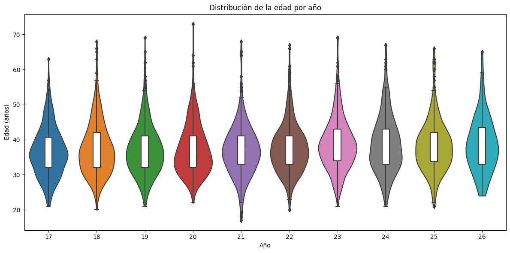
Tabla resumen por año#
Tabla con resumenes estadísticos de cada grupo, número de pacientes, media, mediana, desviación estándar, cuartiles y asimetría.
tabla_edad = (
df.groupby('año')['edad']
.agg(
n='count',
media='mean',
mediana='median',
min='min',
max='max',
sd='std',
var='var',
q1=lambda x: x.quantile(0.25),
q3=lambda x: x.quantile(0.75),
skewness='skew'
)
)
display(tabla_edad)
| n | media | mediana | min | max | sd | var | q1 | q3 | skewness | |
|---|---|---|---|---|---|---|---|---|---|---|
| año | ||||||||||
| 17 | 370 | 36.63 | 36.00 | 21.00 | 63.00 | 6.97 | 48.57 | 32.00 | 40.75 | 0.52 |
| 18 | 443 | 37.44 | 36.00 | 20.00 | 68.00 | 7.48 | 55.94 | 32.00 | 42.00 | 0.86 |
| 19 | 451 | 37.14 | 36.00 | 21.00 | 69.00 | 7.25 | 52.52 | 32.00 | 41.00 | 0.83 |
| 20 | 311 | 37.27 | 36.00 | 22.00 | 73.00 | 7.28 | 52.93 | 32.00 | 41.00 | 1.09 |
| 21 | 378 | 36.98 | 37.00 | 17.00 | 68.00 | 7.32 | 53.51 | 33.00 | 41.00 | 0.71 |
| 22 | 370 | 37.74 | 37.00 | 20.00 | 67.00 | 7.23 | 52.21 | 33.00 | 41.00 | 0.96 |
| 23 | 366 | 38.85 | 38.00 | 21.00 | 69.00 | 7.56 | 57.23 | 34.00 | 43.00 | 0.89 |
| 24 | 339 | 38.77 | 38.00 | 21.00 | 67.00 | 8.09 | 65.37 | 33.00 | 43.00 | 0.67 |
| 25 | 368 | 38.25 | 38.00 | 21.00 | 66.00 | 7.30 | 53.35 | 33.75 | 42.00 | 0.83 |
| 26 | 83 | 38.55 | 38.00 | 24.00 | 65.00 | 7.81 | 61.01 | 33.00 | 43.50 | 0.70 |
Verificación normalidad por año#
Verificamos primero que se siga una distribucion normal, y que no haya diferencias significativas entre los grupos.
from scipy.stats import shapiro
resultados = []
for anio, grupo in df.groupby('año'): #itera por año y revisa cada grupo
datos = grupo['edad'].dropna() #en cada grupo se salta los na
stat, p = shapiro(datos) #shapiro por grupo
resultados.append({
'año': anio,
'n': len(grupo['edad'].dropna()),
'W': stat,
'p_value': p,
'normal': p > 0.05
}) #los agrega a un dafateframe
normalidad = pd.DataFrame(resultados)
display(normalidad)
| año | n | W | p_value | normal | |
|---|---|---|---|---|---|
| 0 | 17 | 370 | 0.98 | 0.00 | False |
| 1 | 18 | 443 | 0.96 | 0.00 | False |
| 2 | 19 | 451 | 0.96 | 0.00 | False |
| 3 | 20 | 311 | 0.94 | 0.00 | False |
| 4 | 21 | 378 | 0.96 | 0.00 | False |
| 5 | 22 | 370 | 0.95 | 0.00 | False |
| 6 | 23 | 366 | 0.96 | 0.00 | False |
| 7 | 24 | 339 | 0.97 | 0.00 | False |
| 8 | 25 | 368 | 0.96 | 0.00 | False |
| 9 | 26 | 83 | 0.97 | 0.04 | False |
Observamos que ningún grupo de edad por año cuenta con el supuesto de normalidad, esto posiblemente a las colas hacia la derecha y la asimetría positiva de cada grupo.
Kruskall Wallis por años#
Utilizamos la prueba no paramétrica de Kruskall Wallis para verificar si existen diferencias significativas entre las medianas de los grupos.
from scipy.stats import kruskal
grupos = []
for _, grupo in df.groupby('año'):
grupos.append(
grupo['edad'].dropna().values
) #agrega un array de cada grupo (año)
stat, p = kruskal(*grupos) # * es el valor en cada grupo
print("Kruskal-Wallis")
print(f"H = {stat:.4f}")
print(f"p = {p:.6f}")
Kruskal-Wallis
H = 34.1989
p = 0.000082
Observamos que si existen diferencias significativas entre la mediana de edad con respecto los años.
Pares de años con diferencias entre distribución de la edad#
Los grupos no tienen la misma mediana, usamos Dunn con Bonferroni para verificar los pares con diferencias significativas.
import scikit_posthocs as sp
dunn = sp.posthoc_dunn(
df,
val_col='edad',
group_col='año',
p_adjust='bonferroni'
)
sig = (
dunn.where(np.triu(np.ones(dunn.shape), k=1).astype(bool))
.stack()
.reset_index()
)
sig.columns = ['año_1', 'año_2', 'p-valor']
sig = sig[sig['p-valor'] < 0.05]
display(sig.sort_values('p-valor'))
| año_1 | año_2 | p-valor | |
|---|---|---|---|
| 5 | 17 | 23 | 0.00 |
| 6 | 17 | 24 | 0.02 |
| 20 | 19 | 23 | 0.03 |
Parámetros seminales por año#
Con el objetivo de evaluar posibles cambios en los parámetros seminales a lo largo del tiempo, se analizaron las distribuciones de cada variable según el año de realización del examen.
Para ello, se emplearon violin plots para visualizar densidad y dispersión de los datos dentro de cada año. Además, se graficaron boxplots (rectángulo blanco) para resaltar medidas de posición como la mediana y el rango intercuartílico
Volumen y pH#
variables = {
'volumen_ml': 'Volumen (mL)',
'ph': 'pH',
}
for var, nombre in variables.items():
plt.figure(figsize=(12, 6))
sns.violinplot(
data=df,
x='año',
y=var,
inner=None,
cut=0
)
sns.boxplot(
data=df,
x='año',
y=var,
width=0.15,
showcaps=True,
boxprops={'facecolor': 'white', 'zorder': 3},
showfliers=True
)
plt.title(f'Distribución de {nombre} por año')
plt.xlabel('Año')
plt.ylabel(nombre)
plt.tight_layout()
plt.show()
# Tabla descriptiva
tabla = (
df.groupby('año')[var]
.agg(
n='count',
media='mean',
mediana='median',
min='min',
max='max',
sd='std',
var='var',
q1=lambda x: x.quantile(0.25),
q3=lambda x: x.quantile(0.75),
skewness='skew'
)
.round(2)
)
print(f'\nResumen descriptivo: {nombre}')
display(tabla)
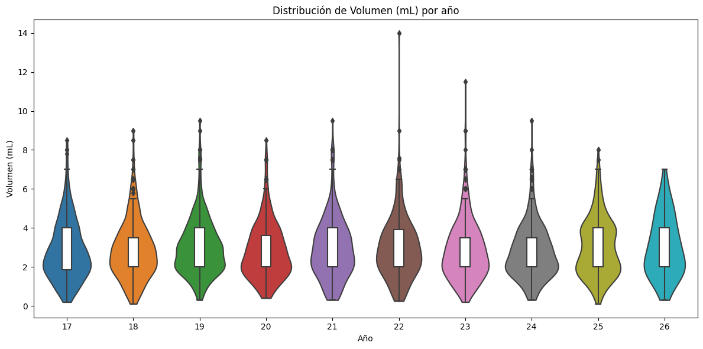
Resumen descriptivo: Volumen (mL)
| n | media | mediana | min | max | sd | var | q1 | q3 | skewness | |
|---|---|---|---|---|---|---|---|---|---|---|
| año | ||||||||||
| 17 | 370 | 2.81 | 2.50 | 0.20 | 8.50 | 1.51 | 2.27 | 1.85 | 4.00 | 0.88 |
| 18 | 443 | 2.85 | 2.50 | 0.10 | 9.00 | 1.46 | 2.14 | 2.00 | 3.50 | 0.82 |
| 19 | 450 | 3.00 | 3.00 | 0.30 | 9.50 | 1.43 | 2.03 | 2.00 | 4.00 | 1.13 |
| 20 | 308 | 2.80 | 2.50 | 0.40 | 8.50 | 1.41 | 1.99 | 2.00 | 3.60 | 0.98 |
| 21 | 378 | 2.94 | 2.80 | 0.30 | 9.50 | 1.54 | 2.38 | 2.00 | 4.00 | 0.90 |
| 22 | 370 | 2.94 | 2.70 | 0.25 | 14.00 | 1.57 | 2.47 | 2.00 | 3.92 | 1.48 |
| 23 | 364 | 2.83 | 2.50 | 0.20 | 11.50 | 1.53 | 2.34 | 2.00 | 3.50 | 1.35 |
| 24 | 339 | 2.77 | 2.50 | 0.30 | 9.50 | 1.39 | 1.93 | 2.00 | 3.50 | 1.09 |
| 25 | 368 | 3.00 | 2.90 | 0.10 | 8.00 | 1.48 | 2.18 | 2.00 | 4.00 | 0.61 |
| 26 | 84 | 3.02 | 3.00 | 0.30 | 7.00 | 1.54 | 2.37 | 2.00 | 4.00 | 0.50 |
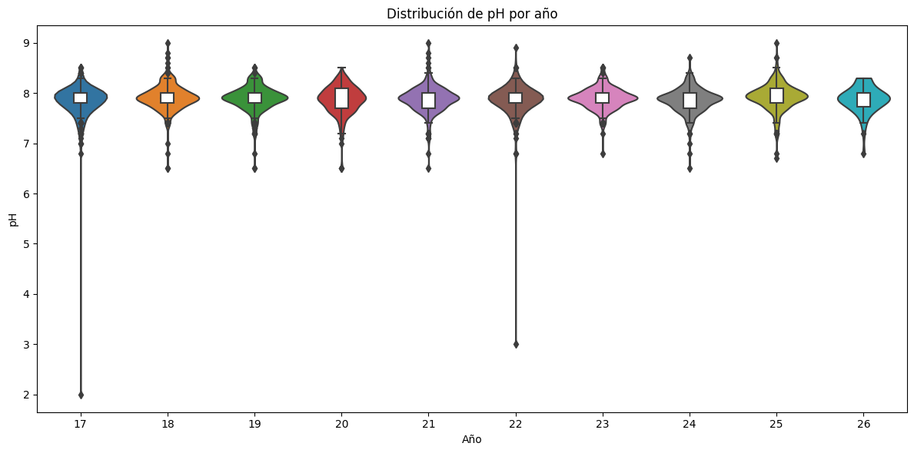
Resumen descriptivo: pH
| n | media | mediana | min | max | sd | var | q1 | q3 | skewness | |
|---|---|---|---|---|---|---|---|---|---|---|
| año | ||||||||||
| 17 | 367 | 7.83 | 7.90 | 2.00 | 8.50 | 0.40 | 0.16 | 7.80 | 8.00 | -8.98 |
| 18 | 408 | 7.91 | 7.90 | 6.50 | 9.00 | 0.26 | 0.07 | 7.80 | 8.00 | -0.62 |
| 19 | 402 | 7.89 | 7.90 | 6.50 | 8.50 | 0.25 | 0.06 | 7.80 | 8.00 | -1.26 |
| 20 | 274 | 7.86 | 7.90 | 6.50 | 8.50 | 0.29 | 0.08 | 7.70 | 8.10 | -1.38 |
| 21 | 321 | 7.88 | 7.90 | 6.50 | 9.00 | 0.26 | 0.07 | 7.70 | 8.00 | -0.53 |
| 22 | 300 | 7.86 | 7.90 | 3.00 | 8.90 | 0.38 | 0.14 | 7.80 | 8.00 | -7.27 |
| 23 | 274 | 7.90 | 7.90 | 6.80 | 8.50 | 0.22 | 0.05 | 7.80 | 8.00 | -0.43 |
| 24 | 269 | 7.85 | 7.90 | 6.50 | 8.70 | 0.25 | 0.06 | 7.70 | 8.00 | -1.00 |
| 25 | 289 | 7.92 | 7.90 | 6.70 | 9.00 | 0.27 | 0.07 | 7.80 | 8.10 | -0.61 |
| 26 | 62 | 7.88 | 7.90 | 6.80 | 8.30 | 0.27 | 0.07 | 7.72 | 8.00 | -1.13 |
Celulas redondas#
df_sin_texto = df.copy()
df_sin_texto['celulas_redondas'] = pd.to_numeric(
df_sin_texto['celulas_redondas'],
errors='coerce'
)
df_sin_texto['aglutinacion_pct'] = pd.to_numeric(
df_sin_texto['aglutinacion_pct'],
errors='coerce'
)
plt.figure(figsize=(12, 6))
sns.violinplot(
data=df_sin_texto,
x='año',
y='celulas_redondas',
inner=None,
cut=0
)
sns.boxplot(
data=df_sin_texto,
x='año',
y='celulas_redondas',
width=0.15,
showcaps=True,
boxprops={'facecolor':'white', 'zorder':3},
showfliers=True
)
plt.title('Distribución de celulas_redondas por año')
plt.xlabel('Año')
plt.ylabel('celulas_redondas')
plt.tight_layout()
plt.show()
tabla_total = (
df_sin_texto.groupby('año')['celulas_redondas']
.agg(
n='count',
media='mean',
mediana='median',
min='min',
max='max',
sd='std',
var='var',
q1=lambda x: x.quantile(0.25),
q3=lambda x: x.quantile(0.75),
skewness='skew'
)
)
display(tabla_total)
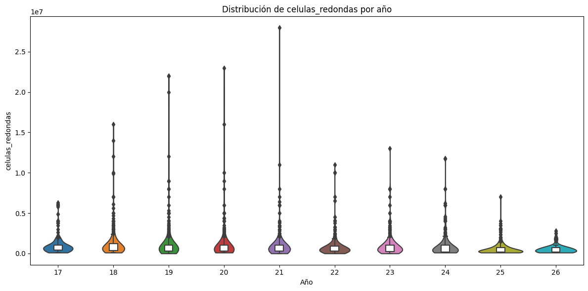
| n | media | mediana | min | max | sd | var | q1 | q3 | skewness | |
|---|---|---|---|---|---|---|---|---|---|---|
| año | ||||||||||
| 17 | 353 | 916,430.59 | 700,000.00 | 100,000.00 | 6,300,000.00 | 950,933.61 | 904,274,723,152.20 | 400,000.00 | 1,000,000.00 | 3.14 |
| 18 | 411 | 1,140,676.40 | 700,000.00 | 100,000.00 | 16,000,000.00 | 1,642,179.02 | 2,696,751,941,368.46 | 350,000.00 | 1,200,000.00 | 5.00 |
| 19 | 425 | 1,133,647.06 | 600,000.00 | 0.00 | 22,000,000.00 | 2,164,959.39 | 4,687,049,167,591.56 | 300,000.00 | 1,000,000.00 | 6.67 |
| 20 | 291 | 1,049,484.54 | 600,000.00 | 100,000.00 | 23,000,000.00 | 2,003,881.94 | 4,015,542,836,829.01 | 300,000.00 | 1,000,000.00 | 6.88 |
| 21 | 360 | 969,444.44 | 600,000.00 | 0.00 | 28,000,000.00 | 1,850,065.04 | 3,422,740,637,573.51 | 300,000.00 | 1,000,000.00 | 9.76 |
| 22 | 333 | 810,510.51 | 500,000.00 | 0.00 | 11,000,000.00 | 1,230,428.97 | 1,513,955,461,485.58 | 300,000.00 | 900,000.00 | 5.28 |
| 23 | 323 | 971,207.43 | 600,000.00 | 0.00 | 13,000,000.00 | 1,338,398.77 | 1,791,311,270,503.63 | 250,000.00 | 1,000,000.00 | 4.45 |
| 24 | 311 | 923,794.21 | 500,000.00 | 100,000.00 | 11,800,000.00 | 1,442,694.53 | 2,081,367,492,998.65 | 200,000.00 | 1,000,000.00 | 4.38 |
| 25 | 341 | 591,495.60 | 300,000.00 | 100,000.00 | 7,000,000.00 | 763,901.24 | 583,545,109,539.42 | 200,000.00 | 700,000.00 | 3.52 |
| 26 | 67 | 567,164.18 | 400,000.00 | 100,000.00 | 2,800,000.00 | 557,697.66 | 311,026,684,758.03 | 200,000.00 | 700,000.00 | 2.18 |
Aglutinación %#
plt.figure(figsize=(12, 6))
sns.violinplot(
data=df_sin_texto,
x='año',
y='aglutinacion_pct',
inner=None,
cut=0
)
sns.boxplot(
data=df_sin_texto,
x='año',
y='aglutinacion_pct',
width=0.15,
showcaps=True,
boxprops={'facecolor':'white', 'zorder':3},
showfliers=True
)
plt.title('Distribución de aglutinacion_pct por año')
plt.xlabel('Año')
plt.ylabel('aglutinacion_pct')
plt.tight_layout()
plt.show()
tabla_total = (
df_sin_texto.groupby('año')['aglutinacion_pct']
.agg(
n='count',
media='mean',
mediana='median',
min='min',
max='max',
sd='std',
var='var',
q1=lambda x: x.quantile(0.25),
q3=lambda x: x.quantile(0.75),
skewness='skew'
)
)
display(tabla_total)
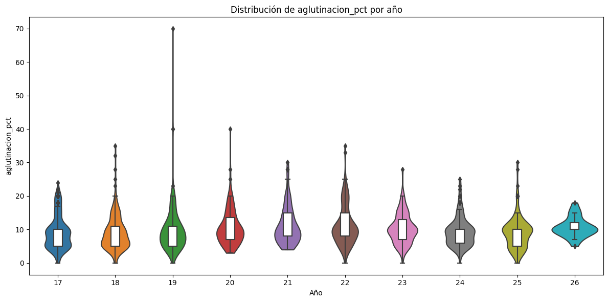
| n | media | mediana | min | max | sd | var | q1 | q3 | skewness | |
|---|---|---|---|---|---|---|---|---|---|---|
| año | ||||||||||
| 17 | 247 | 9.15 | 8.00 | 0.00 | 24.00 | 5.01 | 25.14 | 5.00 | 10.00 | 0.78 |
| 18 | 197 | 9.10 | 8.00 | 0.00 | 35.00 | 5.27 | 27.75 | 5.00 | 11.00 | 1.61 |
| 19 | 187 | 9.96 | 8.00 | 0.00 | 70.00 | 7.00 | 49.06 | 5.00 | 11.00 | 4.41 |
| 20 | 111 | 10.77 | 10.00 | 3.00 | 40.00 | 5.50 | 30.20 | 7.00 | 13.50 | 1.98 |
| 21 | 141 | 11.21 | 10.00 | 4.00 | 30.00 | 5.52 | 30.45 | 8.00 | 15.00 | 1.24 |
| 22 | 118 | 11.44 | 10.00 | 0.00 | 35.00 | 5.99 | 35.86 | 8.00 | 15.00 | 1.34 |
| 23 | 87 | 10.38 | 10.00 | 0.00 | 28.00 | 4.52 | 20.45 | 7.00 | 13.00 | 0.91 |
| 24 | 100 | 9.42 | 10.00 | 0.00 | 25.00 | 4.38 | 19.18 | 6.00 | 10.00 | 1.22 |
| 25 | 126 | 9.10 | 10.00 | 0.00 | 30.00 | 4.82 | 23.19 | 5.00 | 10.00 | 1.44 |
| 26 | 21 | 10.71 | 10.00 | 5.00 | 18.00 | 2.99 | 8.91 | 10.00 | 12.00 | 0.72 |
Total espermatozoides eyaculados#
plt.figure(figsize=(12, 6))
sns.violinplot(
data=df,
x='año',
y='espermatozoides_por_eyaculado',
inner=None,
cut=0
)
sns.boxplot(
data=df,
x='año',
y='espermatozoides_por_eyaculado',
width=0.15,
showcaps=True,
boxprops={'facecolor':'white', 'zorder':3},
showfliers=True
)
plt.title('Distribución de espermatozoides_por_eyaculado por año')
plt.xlabel('Año')
plt.ylabel('espermatozoides_por_eyaculado')
plt.tight_layout()
plt.show()
tabla_total = (
df.groupby('año')['espermatozoides_por_eyaculado']
.agg(
n='count',
media='mean',
mediana='median',
min='min',
max='max',
sd='std',
var='var',
q1=lambda x: x.quantile(0.25),
q3=lambda x: x.quantile(0.75),
skewness='skew'
)
)
display(tabla_total)
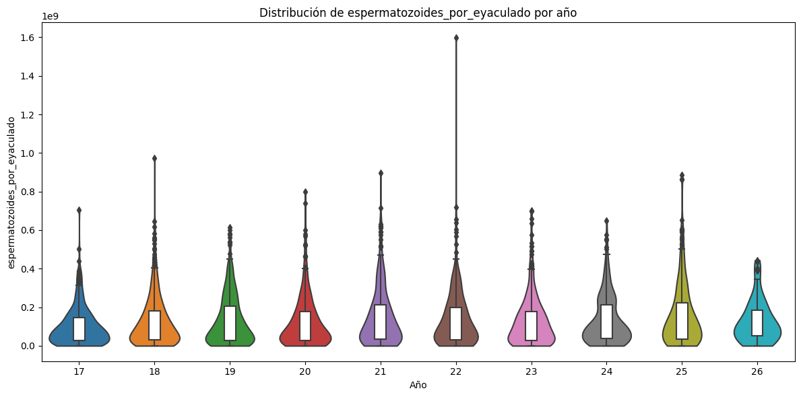
| n | media | mediana | min | max | sd | var | q1 | q3 | skewness | |
|---|---|---|---|---|---|---|---|---|---|---|
| año | ||||||||||
| 17 | 353 | 100,383,909.35 | 72,900,000.00 | 0.00 | 704,000,000.00 | 98,940,788.41 | 9,789,279,611,946,296.00 | 27,200,000.00 | 146,000,000.00 | 1.79 |
| 18 | 431 | 127,722,366.59 | 88,400,000.00 | 0.00 | 972,000,000.00 | 131,612,855.12 | 17,321,943,632,060,652.00 | 30,800,000.00 | 181,000,000.00 | 1.86 |
| 19 | 432 | 132,198,055.56 | 92,000,000.00 | 0.00 | 612,000,000.00 | 128,913,269.37 | 16,618,631,020,340,292.00 | 29,000,000.00 | 205,500,000.00 | 1.24 |
| 20 | 296 | 120,894,493.24 | 78,000,000.00 | 0.00 | 799,500,000.00 | 130,769,857.62 | 17,100,755,661,437,224.00 | 28,770,000.00 | 178,125,000.00 | 1.93 |
| 21 | 369 | 147,998,997.29 | 104,000,000.00 | 0.00 | 896,000,000.00 | 149,632,193.00 | 22,389,793,181,328,788.00 | 36,000,000.00 | 212,000,000.00 | 1.55 |
| 22 | 362 | 136,948,674.03 | 94,000,000.00 | 0.00 | 1,599,000,000.00 | 150,047,616.11 | 22,514,287,100,176,012.00 | 32,312,500.00 | 199,800,000.00 | 3.44 |
| 23 | 360 | 127,002,333.33 | 95,000,000.00 | 0.00 | 700,000,000.00 | 128,634,756.35 | 16,546,900,542,311,966.00 | 28,995,000.00 | 176,250,000.00 | 1.71 |
| 24 | 335 | 132,946,432.84 | 94,000,000.00 | 0.00 | 647,500,000.00 | 124,901,004.34 | 15,600,260,886,114,476.00 | 37,525,000.00 | 213,000,000.00 | 1.29 |
| 25 | 361 | 158,481,232.69 | 106,400,000.00 | 0.00 | 886,500,000.00 | 159,073,199.91 | 25,304,282,929,656,824.00 | 34,200,000.00 | 224,000,000.00 | 1.61 |
| 26 | 80 | 126,388,025.00 | 97,500,000.00 | 0.00 | 444,000,000.00 | 109,456,457.46 | 11,980,716,079,644,940.00 | 52,000,000.00 | 184,500,000.00 | 1.19 |
Concentración por ml#
plt.figure(figsize=(12, 6))
sns.violinplot(
data=df,
x='año',
y='concentracion_por_ml',
inner=None,
cut=0
)
sns.boxplot(
data=df,
x='año',
y='concentracion_por_ml',
width=0.15,
showcaps=True,
boxprops={'facecolor':'white', 'zorder':3},
showfliers=True
)
plt.title('Distribución de concentracion_por_ml por año')
plt.xlabel('Año')
plt.ylabel('concentracion_por_ml')
plt.tight_layout()
plt.show()
tabla_concentracion = (
df.groupby('año')['espermatozoides_por_eyaculado']
.agg(
n='count',
media='mean',
mediana='median',
min='min',
max='max',
sd='std',
var='var',
q1=lambda x: x.quantile(0.25),
q3=lambda x: x.quantile(0.75),
skewness='skew'
)
)
display(tabla_concentracion)
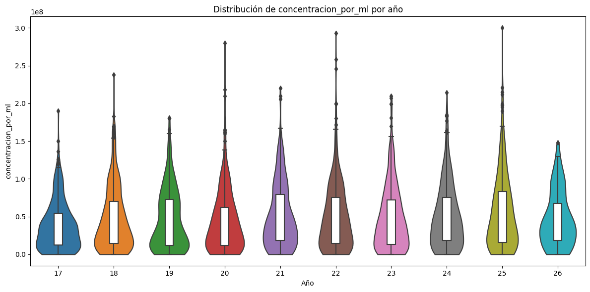
| n | media | mediana | min | max | sd | var | q1 | q3 | skewness | |
|---|---|---|---|---|---|---|---|---|---|---|
| año | ||||||||||
| 17 | 353 | 100,383,909.35 | 72,900,000.00 | 0.00 | 704,000,000.00 | 98,940,788.41 | 9,789,279,611,946,296.00 | 27,200,000.00 | 146,000,000.00 | 1.79 |
| 18 | 431 | 127,722,366.59 | 88,400,000.00 | 0.00 | 972,000,000.00 | 131,612,855.12 | 17,321,943,632,060,652.00 | 30,800,000.00 | 181,000,000.00 | 1.86 |
| 19 | 432 | 132,198,055.56 | 92,000,000.00 | 0.00 | 612,000,000.00 | 128,913,269.37 | 16,618,631,020,340,292.00 | 29,000,000.00 | 205,500,000.00 | 1.24 |
| 20 | 296 | 120,894,493.24 | 78,000,000.00 | 0.00 | 799,500,000.00 | 130,769,857.62 | 17,100,755,661,437,224.00 | 28,770,000.00 | 178,125,000.00 | 1.93 |
| 21 | 369 | 147,998,997.29 | 104,000,000.00 | 0.00 | 896,000,000.00 | 149,632,193.00 | 22,389,793,181,328,788.00 | 36,000,000.00 | 212,000,000.00 | 1.55 |
| 22 | 362 | 136,948,674.03 | 94,000,000.00 | 0.00 | 1,599,000,000.00 | 150,047,616.11 | 22,514,287,100,176,012.00 | 32,312,500.00 | 199,800,000.00 | 3.44 |
| 23 | 360 | 127,002,333.33 | 95,000,000.00 | 0.00 | 700,000,000.00 | 128,634,756.35 | 16,546,900,542,311,966.00 | 28,995,000.00 | 176,250,000.00 | 1.71 |
| 24 | 335 | 132,946,432.84 | 94,000,000.00 | 0.00 | 647,500,000.00 | 124,901,004.34 | 15,600,260,886,114,476.00 | 37,525,000.00 | 213,000,000.00 | 1.29 |
| 25 | 361 | 158,481,232.69 | 106,400,000.00 | 0.00 | 886,500,000.00 | 159,073,199.91 | 25,304,282,929,656,824.00 | 34,200,000.00 | 224,000,000.00 | 1.61 |
| 26 | 80 | 126,388,025.00 | 97,500,000.00 | 0.00 | 444,000,000.00 | 109,456,457.46 | 11,980,716,079,644,940.00 | 52,000,000.00 | 184,500,000.00 | 1.19 |
Eosina, morfología, motilidad, y alteraciones#
variables = ['test_eosina_pct','motilidad_progresiva_pct','motilidad_no_progresiva_pct','inmovil_pct','motilidad_total_pct','espermatozoides_normales_pct','espermatozoides_anormales_pct','alt_cabeza_pct','alt_cola_pct','alt_pieza_intermedia_pct','indice_teratozoospermia']
for var in variables:
plt.figure(figsize=(12, 6))
sns.violinplot(
data=df,
x='año',
y=var,
inner=None,
cut=0
)
sns.boxplot(
data=df,
x='año',
y=var,
width=0.15,
showcaps=True,
boxprops={'facecolor':'white', 'zorder':3},
showfliers=True
)
plt.title(f'Distribución de {var} por año')
plt.xlabel('Año')
plt.ylabel(var)
plt.tight_layout()
plt.show()
tabla_concentracion = (
df.groupby('año')[var]
.agg(
n='count',
media='mean',
mediana='median',
min='min',
max='max',
sd='std',
var='var',
q1=lambda x: x.quantile(0.25),
q3=lambda x: x.quantile(0.75),
skewness='skew'
)
)
display(tabla_concentracion)
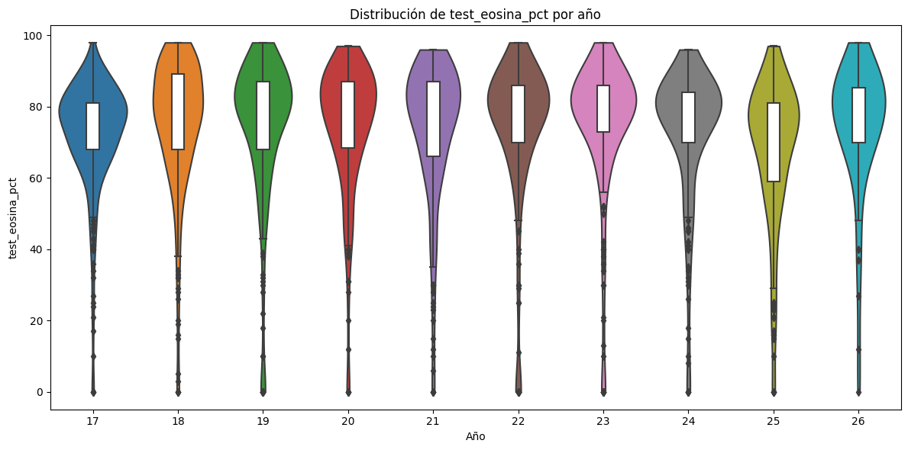
| n | media | mediana | min | max | sd | var | q1 | q3 | skewness | |
|---|---|---|---|---|---|---|---|---|---|---|
| año | ||||||||||
| 17 | 342 | 72.29 | 77.00 | 0.00 | 98.00 | 15.57 | 242.27 | 68.00 | 81.00 | -2.08 |
| 18 | 392 | 75.40 | 79.50 | 0.00 | 98.00 | 18.69 | 349.42 | 68.00 | 89.25 | -1.70 |
| 19 | 365 | 74.32 | 80.00 | 0.00 | 98.00 | 20.76 | 431.01 | 68.00 | 87.00 | -2.02 |
| 20 | 243 | 74.37 | 80.00 | 0.00 | 97.00 | 18.74 | 351.30 | 68.50 | 87.00 | -1.86 |
| 21 | 304 | 73.62 | 80.00 | 0.00 | 96.00 | 19.82 | 392.73 | 66.00 | 87.00 | -1.72 |
| 22 | 284 | 74.02 | 80.00 | 0.00 | 98.00 | 21.03 | 442.31 | 70.00 | 86.00 | -2.26 |
| 23 | 263 | 75.26 | 80.00 | 0.00 | 98.00 | 19.63 | 385.22 | 73.00 | 86.00 | -2.34 |
| 24 | 254 | 72.96 | 80.00 | 0.00 | 96.00 | 19.45 | 378.40 | 70.00 | 84.00 | -2.03 |
| 25 | 272 | 67.94 | 73.00 | 0.00 | 97.00 | 20.30 | 412.15 | 59.00 | 81.00 | -1.43 |
| 26 | 60 | 74.52 | 80.00 | 0.00 | 98.00 | 19.10 | 364.66 | 70.00 | 85.25 | -2.05 |
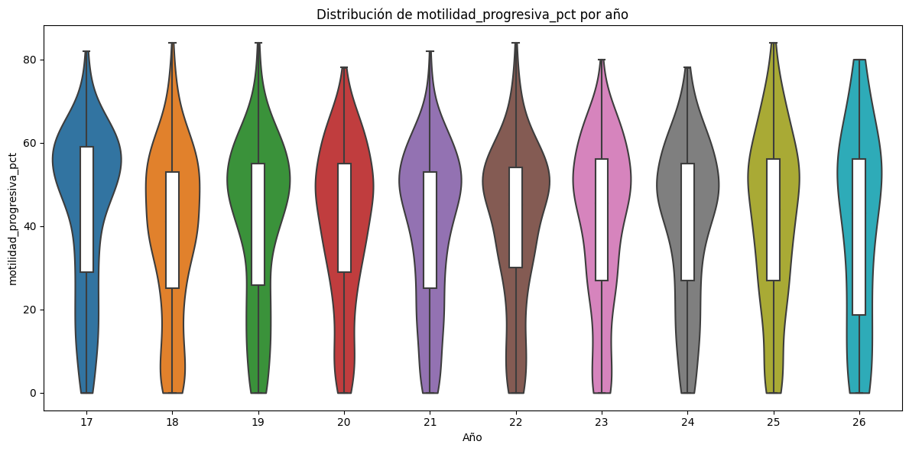
| n | media | mediana | min | max | sd | var | q1 | q3 | skewness | |
|---|---|---|---|---|---|---|---|---|---|---|
| año | ||||||||||
| 17 | 352 | 43.51 | 50.00 | 0.00 | 82.00 | 19.61 | 384.67 | 29.00 | 59.00 | -0.68 |
| 18 | 431 | 38.35 | 41.00 | 0.00 | 84.00 | 19.75 | 389.93 | 25.00 | 53.00 | -0.38 |
| 19 | 432 | 40.53 | 46.00 | 0.00 | 84.00 | 19.65 | 386.26 | 25.75 | 55.00 | -0.52 |
| 20 | 297 | 40.77 | 44.00 | 0.00 | 78.00 | 18.67 | 348.39 | 29.00 | 55.00 | -0.52 |
| 21 | 368 | 39.09 | 43.50 | 0.00 | 82.00 | 18.93 | 358.23 | 25.00 | 53.00 | -0.48 |
| 22 | 362 | 40.47 | 45.00 | 0.00 | 84.00 | 18.78 | 352.74 | 30.00 | 54.00 | -0.57 |
| 23 | 360 | 40.57 | 45.50 | 0.00 | 80.00 | 19.69 | 387.58 | 27.00 | 56.00 | -0.56 |
| 24 | 336 | 40.69 | 45.00 | 0.00 | 78.00 | 18.96 | 359.62 | 27.00 | 55.00 | -0.53 |
| 25 | 359 | 41.33 | 44.00 | 0.00 | 84.00 | 20.40 | 416.04 | 27.00 | 56.00 | -0.33 |
| 26 | 80 | 39.42 | 43.00 | 0.00 | 80.00 | 22.97 | 527.79 | 18.75 | 56.00 | -0.27 |
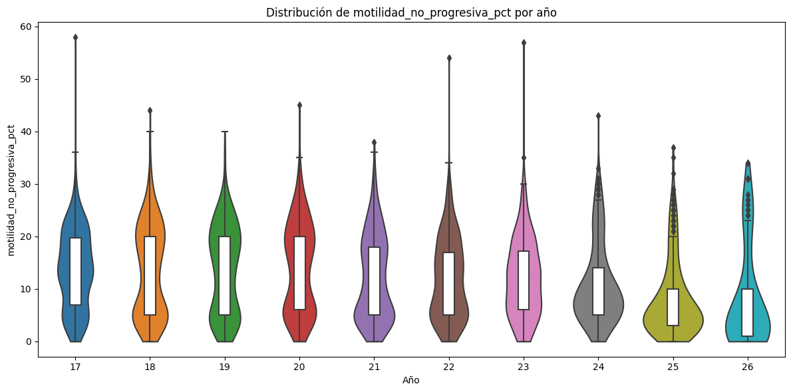
| n | media | mediana | min | max | sd | var | q1 | q3 | skewness | |
|---|---|---|---|---|---|---|---|---|---|---|
| año | ||||||||||
| 17 | 350 | 13.71 | 13.00 | 0.00 | 58.00 | 7.64 | 58.36 | 7.00 | 19.75 | 0.58 |
| 18 | 431 | 13.38 | 13.00 | 0.00 | 44.00 | 8.64 | 74.66 | 5.00 | 20.00 | 0.30 |
| 19 | 433 | 13.59 | 14.00 | 0.00 | 40.00 | 8.41 | 70.77 | 5.00 | 20.00 | 0.12 |
| 20 | 297 | 14.01 | 15.00 | 0.00 | 45.00 | 8.51 | 72.50 | 6.00 | 20.00 | 0.28 |
| 21 | 368 | 12.03 | 10.00 | 0.00 | 38.00 | 8.12 | 65.92 | 5.00 | 18.00 | 0.50 |
| 22 | 362 | 11.83 | 11.00 | 0.00 | 54.00 | 7.78 | 60.50 | 5.00 | 17.00 | 0.78 |
| 23 | 360 | 12.13 | 12.00 | 0.00 | 57.00 | 7.59 | 57.60 | 6.00 | 17.25 | 0.87 |
| 24 | 336 | 10.90 | 9.00 | 0.00 | 43.00 | 7.77 | 60.36 | 5.00 | 14.00 | 1.08 |
| 25 | 359 | 8.08 | 6.00 | 0.00 | 37.00 | 7.23 | 52.34 | 3.00 | 10.00 | 1.41 |
| 26 | 80 | 8.32 | 4.50 | 0.00 | 34.00 | 9.54 | 91.03 | 1.00 | 10.00 | 1.23 |
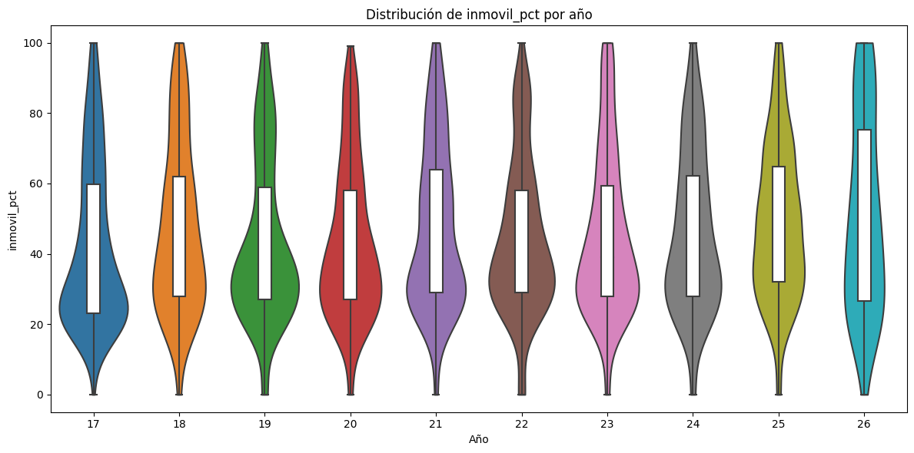
| n | media | mediana | min | max | sd | var | q1 | q3 | skewness | |
|---|---|---|---|---|---|---|---|---|---|---|
| año | ||||||||||
| 17 | 350 | 41.96 | 34.00 | 0.00 | 100.00 | 22.97 | 527.61 | 23.00 | 59.75 | 0.79 |
| 18 | 431 | 46.65 | 42.00 | 0.00 | 100.00 | 23.60 | 556.80 | 28.00 | 62.00 | 0.48 |
| 19 | 433 | 42.97 | 37.00 | 0.00 | 100.00 | 22.93 | 525.68 | 27.00 | 59.00 | 0.67 |
| 20 | 297 | 43.21 | 38.00 | 0.00 | 99.00 | 21.84 | 476.98 | 27.00 | 58.00 | 0.63 |
| 21 | 368 | 47.25 | 40.50 | 0.00 | 100.00 | 23.06 | 531.98 | 29.00 | 64.00 | 0.47 |
| 22 | 362 | 44.11 | 39.00 | 0.00 | 100.00 | 21.75 | 473.01 | 29.00 | 58.00 | 0.52 |
| 23 | 360 | 45.10 | 39.00 | 0.00 | 100.00 | 23.07 | 532.25 | 28.00 | 59.25 | 0.72 |
| 24 | 336 | 46.02 | 41.00 | 0.00 | 100.00 | 22.67 | 514.08 | 28.00 | 62.25 | 0.42 |
| 25 | 358 | 48.53 | 47.00 | 0.00 | 100.00 | 21.59 | 466.00 | 32.00 | 64.75 | 0.29 |
| 26 | 80 | 51.02 | 46.00 | 0.00 | 100.00 | 27.21 | 740.23 | 26.50 | 75.25 | 0.37 |
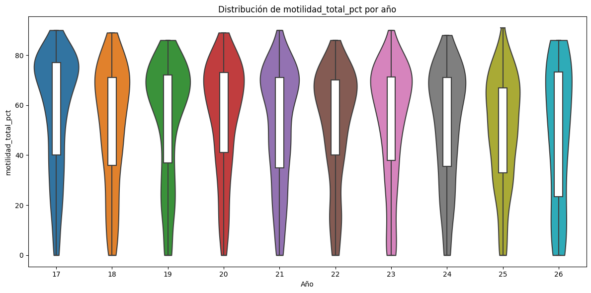
| n | media | mediana | min | max | sd | var | q1 | q3 | skewness | |
|---|---|---|---|---|---|---|---|---|---|---|
| año | ||||||||||
| 17 | 352 | 57.14 | 65.00 | 0.00 | 90.00 | 23.50 | 552.14 | 40.00 | 77.00 | -0.82 |
| 18 | 431 | 51.72 | 57.00 | 0.00 | 89.00 | 23.78 | 565.37 | 36.00 | 71.00 | -0.57 |
| 19 | 433 | 54.03 | 62.00 | 0.00 | 86.00 | 23.65 | 559.19 | 37.00 | 72.00 | -0.83 |
| 20 | 297 | 54.77 | 61.00 | 0.00 | 89.00 | 22.38 | 500.70 | 41.00 | 73.00 | -0.79 |
| 21 | 368 | 51.12 | 56.00 | 0.00 | 90.00 | 23.20 | 538.38 | 35.00 | 71.00 | -0.58 |
| 22 | 362 | 52.30 | 59.50 | 0.00 | 86.00 | 22.41 | 502.40 | 40.00 | 70.00 | -0.83 |
| 23 | 360 | 52.70 | 60.00 | 0.00 | 90.00 | 23.47 | 550.84 | 38.00 | 71.25 | -0.84 |
| 24 | 336 | 51.59 | 57.00 | 0.00 | 88.00 | 22.96 | 527.04 | 35.50 | 71.00 | -0.60 |
| 25 | 359 | 49.40 | 52.00 | 0.00 | 91.00 | 21.76 | 473.41 | 33.00 | 67.00 | -0.51 |
| 26 | 80 | 47.75 | 54.00 | 0.00 | 86.00 | 27.16 | 737.61 | 23.50 | 73.25 | -0.39 |
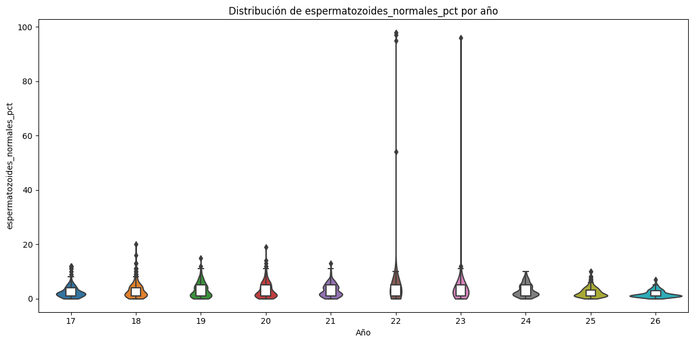
| n | media | mediana | min | max | sd | var | q1 | q3 | skewness | |
|---|---|---|---|---|---|---|---|---|---|---|
| año | ||||||||||
| 17 | 342 | 2.65 | 2.00 | 0.00 | 12.00 | 2.39 | 5.72 | 1.00 | 4.00 | 1.82 |
| 18 | 387 | 3.17 | 2.00 | 0.00 | 20.00 | 2.89 | 8.33 | 1.00 | 4.00 | 1.68 |
| 19 | 363 | 3.12 | 2.00 | 0.00 | 15.00 | 2.62 | 6.87 | 1.00 | 5.00 | 0.95 |
| 20 | 243 | 3.26 | 2.00 | 0.00 | 19.00 | 2.97 | 8.81 | 1.00 | 5.00 | 1.54 |
| 21 | 294 | 3.13 | 2.00 | 0.00 | 13.00 | 2.33 | 5.42 | 1.00 | 5.00 | 0.83 |
| 22 | 278 | 4.31 | 2.00 | 0.00 | 98.00 | 10.43 | 108.71 | 1.00 | 5.00 | 7.97 |
| 23 | 257 | 3.53 | 2.00 | 0.00 | 96.00 | 6.29 | 39.54 | 1.00 | 5.00 | 12.56 |
| 24 | 253 | 3.13 | 2.00 | 0.00 | 10.00 | 2.29 | 5.25 | 1.00 | 5.00 | 0.76 |
| 25 | 268 | 2.50 | 2.00 | 0.00 | 10.00 | 1.94 | 3.78 | 1.00 | 3.25 | 1.30 |
| 26 | 59 | 1.85 | 1.00 | 0.00 | 7.00 | 1.35 | 1.82 | 1.00 | 3.00 | 1.64 |
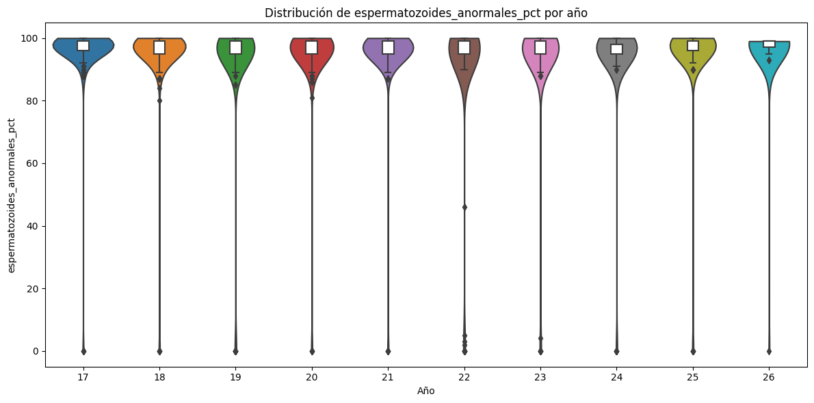
| n | media | mediana | min | max | sd | var | q1 | q3 | skewness | |
|---|---|---|---|---|---|---|---|---|---|---|
| año | ||||||||||
| 17 | 342 | 96.18 | 98.00 | 0.00 | 100.00 | 10.74 | 115.45 | 96.00 | 99.00 | -8.47 |
| 18 | 387 | 95.28 | 98.00 | 0.00 | 100.00 | 12.31 | 151.51 | 95.00 | 99.00 | -7.25 |
| 19 | 363 | 93.29 | 97.00 | 0.00 | 100.00 | 18.18 | 330.68 | 95.00 | 99.00 | -4.86 |
| 20 | 243 | 94.69 | 98.00 | 0.00 | 100.00 | 14.06 | 197.72 | 95.00 | 99.00 | -6.35 |
| 21 | 294 | 95.17 | 97.00 | 0.00 | 100.00 | 12.75 | 162.49 | 95.00 | 99.00 | -7.14 |
| 22 | 278 | 91.73 | 97.00 | 0.00 | 100.00 | 21.35 | 455.89 | 95.00 | 99.00 | -3.96 |
| 23 | 257 | 93.36 | 97.00 | 0.00 | 100.00 | 17.90 | 320.25 | 95.00 | 99.00 | -4.95 |
| 24 | 253 | 94.11 | 98.00 | 0.00 | 100.00 | 16.06 | 257.98 | 95.00 | 98.00 | -5.62 |
| 25 | 268 | 95.26 | 98.00 | 0.00 | 100.00 | 14.57 | 212.25 | 96.00 | 99.00 | -6.32 |
| 26 | 59 | 96.46 | 99.00 | 0.00 | 99.00 | 12.84 | 164.94 | 97.00 | 99.00 | -7.56 |
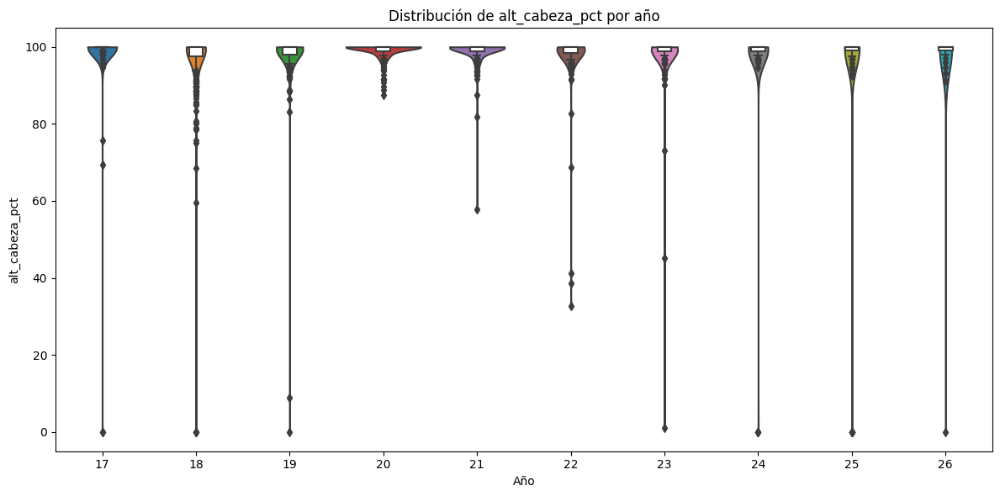
| n | media | mediana | min | max | sd | var | q1 | q3 | skewness | |
|---|---|---|---|---|---|---|---|---|---|---|
| año | ||||||||||
| 17 | 340 | 99.09 | 100.00 | 0.00 | 100.00 | 7.94 | 63.11 | 100.00 | 100.00 | -11.75 |
| 18 | 384 | 96.72 | 100.00 | 0.00 | 100.00 | 9.97 | 99.41 | 97.52 | 100.00 | -7.55 |
| 19 | 348 | 98.21 | 100.00 | 0.00 | 100.00 | 7.50 | 56.19 | 97.99 | 100.00 | -11.47 |
| 20 | 237 | 98.96 | 100.00 | 87.50 | 100.00 | 2.07 | 4.27 | 98.94 | 100.00 | -2.93 |
| 21 | 289 | 98.86 | 100.00 | 57.89 | 100.00 | 3.16 | 10.00 | 98.94 | 100.00 | -8.56 |
| 22 | 267 | 98.10 | 100.00 | 32.65 | 100.00 | 7.00 | 48.99 | 98.42 | 100.00 | -7.79 |
| 23 | 249 | 98.23 | 100.00 | 1.00 | 100.00 | 7.45 | 55.45 | 98.90 | 100.00 | -10.69 |
| 24 | 249 | 98.13 | 100.00 | 0.00 | 100.00 | 10.91 | 119.06 | 98.94 | 100.00 | -8.87 |
| 25 | 268 | 97.27 | 100.00 | 0.00 | 100.00 | 14.79 | 218.83 | 98.98 | 100.00 | -6.43 |
| 26 | 59 | 97.64 | 100.00 | 0.00 | 100.00 | 13.04 | 170.05 | 99.00 | 100.00 | -7.49 |
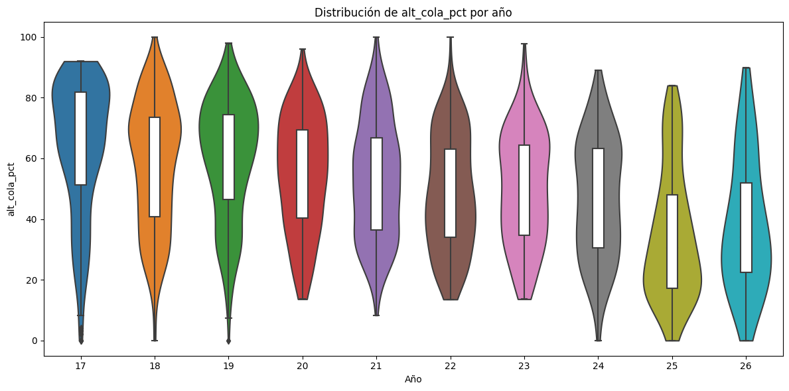
| n | media | mediana | min | max | sd | var | q1 | q3 | skewness | |
|---|---|---|---|---|---|---|---|---|---|---|
| año | ||||||||||
| 17 | 335 | 63.64 | 68.36 | 0.00 | 92.00 | 21.83 | 476.70 | 51.27 | 81.91 | -0.86 |
| 18 | 385 | 57.75 | 61.00 | 0.00 | 100.00 | 20.81 | 433.08 | 40.81 | 73.46 | -0.35 |
| 19 | 345 | 59.75 | 63.50 | 0.00 | 97.89 | 19.55 | 382.09 | 46.39 | 74.48 | -0.55 |
| 20 | 236 | 54.57 | 55.31 | 13.63 | 95.91 | 18.71 | 350.22 | 40.40 | 69.46 | -0.24 |
| 21 | 289 | 52.78 | 52.00 | 8.33 | 100.00 | 19.25 | 370.67 | 36.45 | 66.66 | 0.12 |
| 22 | 267 | 48.39 | 47.36 | 13.54 | 100.00 | 18.81 | 353.69 | 34.02 | 63.05 | 0.13 |
| 23 | 249 | 49.85 | 49.49 | 13.63 | 97.84 | 18.39 | 338.17 | 34.73 | 64.28 | -0.01 |
| 24 | 249 | 46.78 | 46.93 | 0.00 | 89.13 | 19.76 | 390.47 | 30.52 | 63.26 | -0.07 |
| 25 | 268 | 34.67 | 30.45 | 0.00 | 84.00 | 21.32 | 454.37 | 17.19 | 48.05 | 0.62 |
| 26 | 59 | 38.05 | 34.02 | 0.00 | 89.89 | 21.86 | 477.71 | 22.52 | 52.01 | 0.51 |
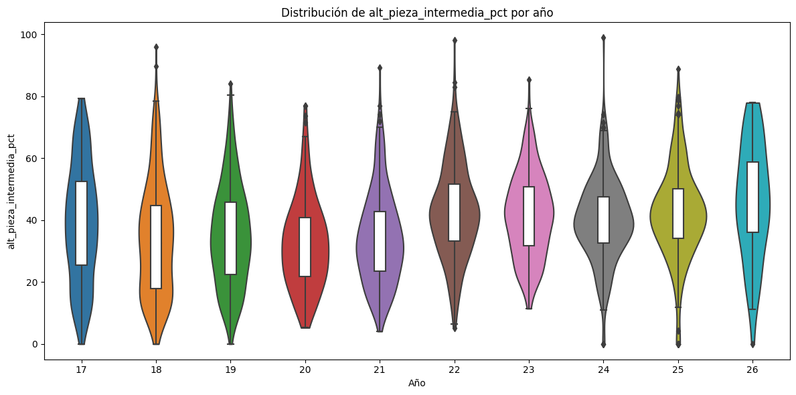
| n | media | mediana | min | max | sd | var | q1 | q3 | skewness | |
|---|---|---|---|---|---|---|---|---|---|---|
| año | ||||||||||
| 17 | 340 | 38.90 | 39.79 | 0.00 | 79.30 | 19.06 | 363.41 | 25.41 | 52.52 | 0.08 |
| 18 | 385 | 33.90 | 32.65 | 0.00 | 95.90 | 18.33 | 336.08 | 18.00 | 44.79 | 0.52 |
| 19 | 349 | 34.92 | 33.68 | 0.00 | 84.00 | 16.21 | 262.81 | 22.44 | 45.83 | 0.35 |
| 20 | 236 | 32.42 | 31.21 | 5.26 | 77.00 | 14.45 | 208.71 | 21.74 | 40.87 | 0.60 |
| 21 | 289 | 34.22 | 32.65 | 4.08 | 89.17 | 14.97 | 224.09 | 23.46 | 42.85 | 0.64 |
| 22 | 267 | 42.75 | 42.42 | 5.05 | 98.00 | 15.10 | 227.92 | 33.16 | 51.61 | 0.28 |
| 23 | 248 | 41.51 | 41.93 | 11.45 | 85.26 | 13.53 | 183.15 | 31.63 | 50.65 | 0.21 |
| 24 | 249 | 40.11 | 39.39 | 0.00 | 99.00 | 13.38 | 178.99 | 32.65 | 47.47 | 0.21 |
| 25 | 268 | 42.23 | 41.91 | 0.00 | 88.88 | 14.96 | 223.76 | 34.02 | 50.00 | -0.04 |
| 26 | 59 | 45.96 | 45.12 | 0.00 | 77.89 | 18.44 | 340.07 | 36.03 | 58.66 | -0.22 |
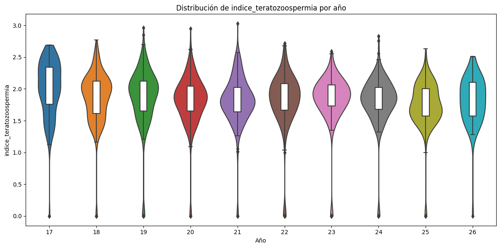
| n | media | mediana | min | max | sd | var | q1 | q3 | skewness | |
|---|---|---|---|---|---|---|---|---|---|---|
| año | ||||||||||
| 17 | 339 | 2.01 | 2.04 | 0.00 | 2.69 | 0.43 | 0.19 | 1.76 | 2.34 | -1.06 |
| 18 | 386 | 1.87 | 1.92 | 0.00 | 2.77 | 0.40 | 0.16 | 1.61 | 2.12 | -1.48 |
| 19 | 360 | 1.87 | 1.95 | 0.00 | 2.96 | 0.47 | 0.22 | 1.65 | 2.12 | -1.97 |
| 20 | 242 | 1.82 | 1.85 | 0.00 | 2.95 | 0.39 | 0.15 | 1.65 | 2.04 | -1.82 |
| 21 | 293 | 1.82 | 1.82 | 0.00 | 3.03 | 0.39 | 0.15 | 1.64 | 2.02 | -1.48 |
| 22 | 278 | 1.82 | 1.88 | 0.00 | 2.72 | 0.46 | 0.22 | 1.66 | 2.08 | -2.22 |
| 23 | 257 | 1.84 | 1.90 | 0.00 | 2.59 | 0.40 | 0.16 | 1.73 | 2.06 | -2.91 |
| 24 | 253 | 1.81 | 1.85 | 0.00 | 2.83 | 0.40 | 0.16 | 1.68 | 2.02 | -2.45 |
| 25 | 268 | 1.74 | 1.73 | 0.00 | 2.63 | 0.38 | 0.14 | 1.57 | 2.00 | -2.02 |
| 26 | 59 | 1.82 | 1.81 | 0.00 | 2.51 | 0.38 | 0.15 | 1.57 | 2.10 | -1.71 |
Categóricas - Viscosidad, mucólisis, bacterias, trazas de gel#
variables = {
'viscosidad': 'Viscosidad',
'mucolisis': 'Mucólisis',
'examen_hora': 'Bacterias',
'trazas_gel': 'Trazas de gel'
}
for var, nombre in variables.items():
tabla = (
pd.crosstab(
df['año'],
df[var],
normalize='index'
) * 100
)
print(f'\nDistribución porcentual de {nombre} por año')
display(tabla.round(2))
tabla.plot(
kind='bar',
stacked=True,
figsize=(10, 5)
)
plt.ylabel('Porcentaje (%)')
plt.xlabel('Año')
plt.title(f'{nombre} por año')
plt.legend(title=nombre, bbox_to_anchor=(1.05, 1), loc='upper left')
plt.tight_layout()
plt.show()
Distribución porcentual de Viscosidad por año
| viscosidad | AUMENTADA | LIGERAMENTE AUMENTADA | MUY AUMENTADA | NORMAL |
|---|---|---|---|---|
| año | ||||
| 17 | 34.05 | 11.62 | 0.00 | 54.32 |
| 18 | 30.16 | 12.47 | 0.00 | 57.37 |
| 19 | 32.44 | 10.51 | 0.00 | 57.05 |
| 20 | 24.51 | 10.78 | 0.00 | 64.71 |
| 21 | 24.87 | 8.02 | 0.53 | 66.58 |
| 22 | 17.08 | 7.71 | 0.00 | 75.21 |
| 23 | 21.21 | 5.51 | 0.00 | 73.28 |
| 24 | 22.22 | 7.51 | 0.00 | 70.27 |
| 25 | 25.41 | 11.20 | 0.00 | 63.39 |
| 26 | 40.91 | 16.67 | 0.00 | 42.42 |
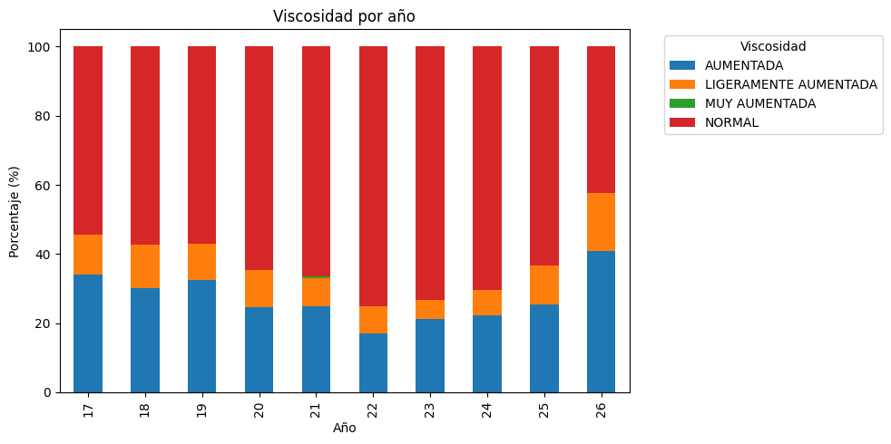
Distribución porcentual de Mucólisis por año
| mucolisis | COMPLETA | INCOMPLETA |
|---|---|---|
| año | ||
| 17 | 59.46 | 40.54 |
| 18 | 59.64 | 40.36 |
| 19 | 62.64 | 37.36 |
| 20 | 68.95 | 31.05 |
| 21 | 71.66 | 28.34 |
| 22 | 79.06 | 20.94 |
| 23 | 74.59 | 25.41 |
| 24 | 71.47 | 28.53 |
| 25 | 71.86 | 28.14 |
| 26 | 57.83 | 42.17 |
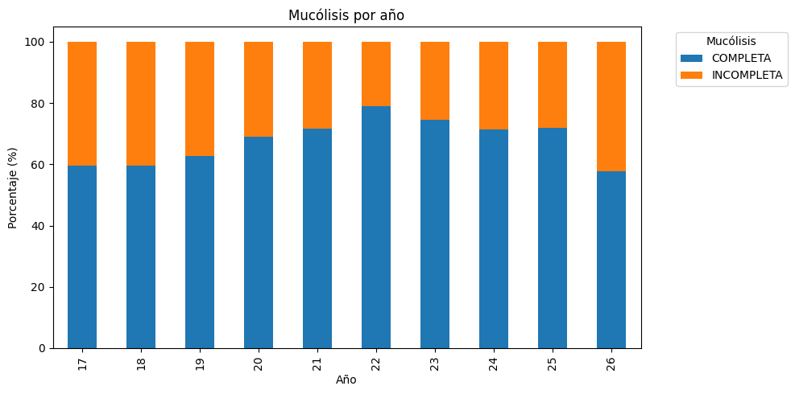
Distribución porcentual de Bacterias por año
| examen_hora | BACTERIAS | BACTERIAS + | BACTERIAS ++ | BACTERIAS +++ | BACTERIAS ++++ | BACTERIAS = 2000000 | ESCASAS |
|---|---|---|---|---|---|---|---|
| año | |||||||
| 17 | 0.29 | 32.35 | 31.76 | 10.00 | 0.88 | 0.00 | 24.71 |
| 18 | 0.00 | 40.47 | 24.80 | 3.66 | 0.00 | 0.00 | 31.07 |
| 19 | 0.27 | 39.19 | 18.92 | 8.11 | 0.81 | 0.00 | 32.70 |
| 20 | 0.00 | 38.11 | 23.36 | 6.56 | 0.82 | 0.00 | 31.15 |
| 21 | 0.00 | 33.22 | 25.61 | 5.54 | 0.35 | 0.00 | 35.29 |
| 22 | 0.38 | 30.83 | 34.59 | 5.26 | 0.00 | 0.38 | 28.57 |
| 23 | 0.44 | 34.65 | 38.16 | 5.26 | 0.00 | 0.00 | 21.49 |
| 24 | 0.00 | 39.68 | 25.51 | 4.05 | 0.00 | 0.00 | 30.77 |
| 25 | 0.00 | 32.80 | 33.60 | 2.40 | 0.00 | 0.00 | 31.20 |
| 26 | 0.00 | 48.00 | 28.00 | 12.00 | 0.00 | 0.00 | 12.00 |
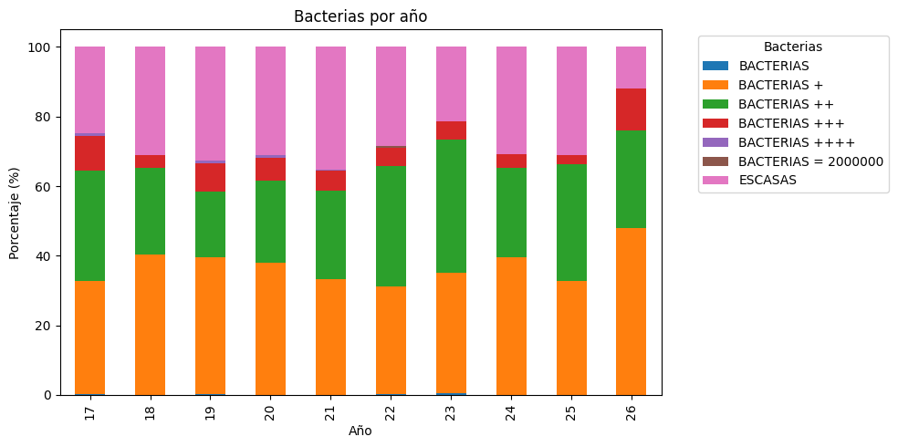
Distribución porcentual de Trazas de gel por año
| trazas_gel | NO | SI |
|---|---|---|
| año | ||
| 17 | 98.65 | 1.35 |
| 18 | 97.07 | 2.93 |
| 19 | 96.45 | 3.55 |
| 20 | 98.07 | 1.93 |
| 21 | 98.15 | 1.85 |
| 22 | 98.38 | 1.62 |
| 23 | 98.63 | 1.37 |
| 24 | 97.64 | 2.36 |
| 25 | 94.29 | 5.71 |
| 26 | 95.24 | 4.76 |
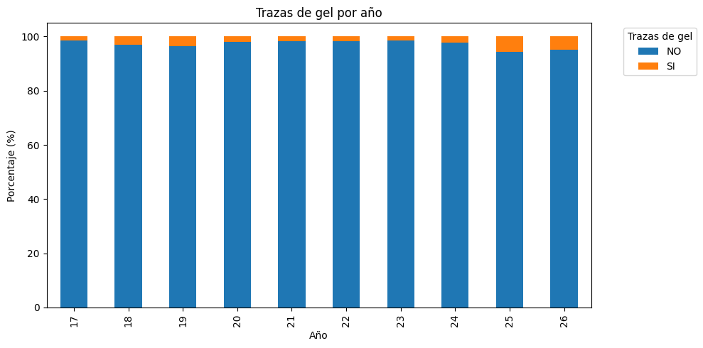
Bivariado - Edad#
En esta sección se evaluamos la relación entre los parámetros seminales y la edad de los pacientes.
En primer lugar, se evaluó la asociación entre la edad y las distintas variables mediante técnicas de correlación y visualizaciones que permiten identificar tendencias generales. En segundo lugar, se construyeron grupos etarios con el propósito de facilitar la comparación entre rangos de edad.
En la gráfica pueden observarse los valores de Rho (ρ) y p, los cuales corresponden al coeficiente de correlación de Spearman y al valor de significancia estadística.
Volumen mL#
from scipy.stats import spearmanr
var = 'volumen_ml'
temp = df[['edad', var]].dropna()
rho, p = spearmanr(temp['edad'], temp[var])
temp['grupo_edad'] = pd.cut(temp['edad'], bins=[17,30,40,50,100], labels=['17-30','31-40','41-50','>50'])
fig, (ax1, ax2) = plt.subplots(1, 2, figsize=(14, 5), gridspec_kw={'width_ratios': [1.2, 1]})
sns.regplot(data=temp, x='edad', y=var, scatter_kws={'alpha': 0.2}, ax=ax1)
ax1.set_title(f'Edad vs {var}\nSpearman ρ = {rho:.3f} | p = {p:.4g}')
sns.violinplot(data=temp, x='grupo_edad', y=var, inner=None, cut=0, ax=ax2)
sns.boxplot(data=temp, x='grupo_edad', y=var, width=0.15, showfliers=True, boxprops={'facecolor': 'white'}, ax=ax2)
ax2.set_title(f'{var} por grupos etarios')
plt.tight_layout()
plt.show()
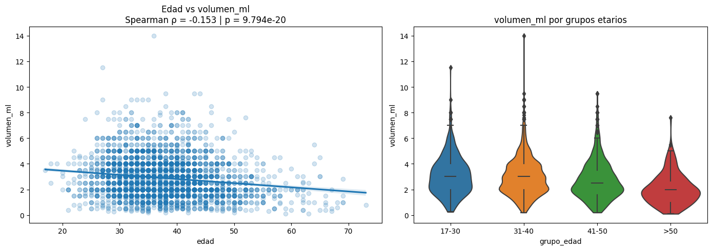
pH#
var = 'ph'
temp = df[['edad', var]].dropna()
rho, p = spearmanr(temp['edad'], temp[var])
temp['grupo_edad'] = pd.cut(temp['edad'], bins=[17,30,40,50,100], labels=['17-30','31-40','41-50','>50'])
fig, (ax1, ax2) = plt.subplots(1, 2, figsize=(14, 5), gridspec_kw={'width_ratios': [1.2, 1]})
sns.regplot(data=temp, x='edad', y=var, scatter_kws={'alpha': 0.2}, ax=ax1)
ax1.set_title(f'Edad vs {var}\nSpearman ρ = {rho:.3f} | p = {p:.4g}')
sns.violinplot(data=temp, x='grupo_edad', y=var, inner=None, cut=0, ax=ax2)
sns.boxplot(data=temp, x='grupo_edad', y=var, width=0.15, showfliers=True, boxprops={'facecolor': 'white'}, ax=ax2)
ax2.set_title(f'{var} por grupos etarios')
plt.tight_layout()
plt.show()
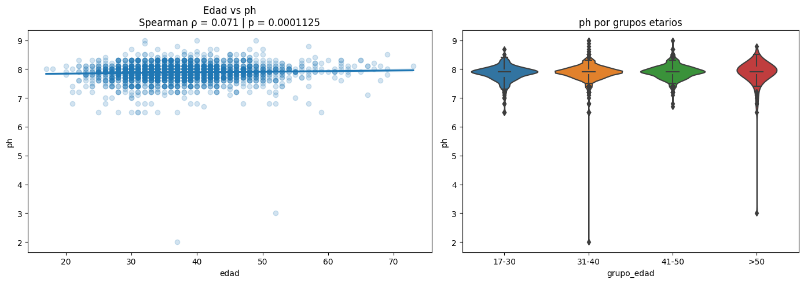
Celulas redondas#
var = 'celulas_redondas'
temp = df_sin_texto[['edad', var]].dropna()
rho, p = spearmanr(temp['edad'], temp[var])
temp['grupo_edad'] = pd.cut(temp['edad'], bins=[17,30,40,50,100], labels=['17-30','31-40','41-50','>50'])
fig, (ax1, ax2) = plt.subplots(1, 2, figsize=(14, 5), gridspec_kw={'width_ratios': [1.2, 1]})
sns.regplot(data=temp, x='edad', y=var, scatter_kws={'alpha': 0.2}, ax=ax1)
ax1.set_title(f'Edad vs {var}\nSpearman ρ = {rho:.3f} | p = {p:.4g}')
sns.violinplot(data=temp, x='grupo_edad', y=var, inner=None, cut=0, ax=ax2)
sns.boxplot(data=temp, x='grupo_edad', y=var, width=0.15, showfliers=True, boxprops={'facecolor': 'white'}, ax=ax2)
ax2.set_title(f'{var} por grupos etarios')
plt.tight_layout()
plt.show()
Aglutinacion#
var = 'aglutinacion_pct'
temp = df_sin_texto[['edad', var]].dropna()
rho, p = spearmanr(temp['edad'], temp[var])
temp['grupo_edad'] = pd.cut(temp['edad'], bins=[17,30,40,50,100], labels=['17-30','31-40','41-50','>50'])
fig, (ax1, ax2) = plt.subplots(1, 2, figsize=(14, 5), gridspec_kw={'width_ratios': [1.2, 1]})
sns.regplot(data=temp, x='edad', y=var, scatter_kws={'alpha': 0.2}, ax=ax1)
ax1.set_title(f'Edad vs {var}\nSpearman ρ = {rho:.3f} | p = {p:.4g}')
sns.violinplot(data=temp, x='grupo_edad', y=var, inner=None, cut=0, ax=ax2)
sns.boxplot(data=temp, x='grupo_edad', y=var, width=0.15, showfliers=True, boxprops={'facecolor': 'white'}, ax=ax2)
ax2.set_title(f'{var} por grupos etarios')
plt.tight_layout()
plt.show()
Total espermatozoides eyaculados#
var = 'espermatozoides_por_eyaculado'
temp = df[['edad', var]].dropna()
rho, p = spearmanr(temp['edad'], temp[var])
temp['grupo_edad'] = pd.cut(temp['edad'], bins=[17,30,40,50,100], labels=['17-30','31-40','41-50','>50'])
fig, (ax1, ax2) = plt.subplots(1, 2, figsize=(14, 5), gridspec_kw={'width_ratios': [1.2, 1]})
sns.regplot(data=temp, x='edad', y=var, scatter_kws={'alpha': 0.2}, ax=ax1)
ax1.set_title(f'Edad vs {var}\nSpearman ρ = {rho:.3f} | p = {p:.4g}')
sns.violinplot(data=temp, x='grupo_edad', y=var, inner=None, cut=0, ax=ax2)
sns.boxplot(data=temp, x='grupo_edad', y=var, width=0.15, showfliers=True, boxprops={'facecolor': 'white'}, ax=ax2)
ax2.set_title(f'{var} por grupos etarios')
plt.tight_layout()
plt.show()
Concentración por ml#
var = 'concentracion_por_ml'
temp = df[['edad', var]].dropna()
rho, p = spearmanr(temp['edad'], temp[var])
temp['grupo_edad'] = pd.cut(temp['edad'], bins=[17,30,40,50,100], labels=['17-30','31-40','41-50','>50'])
fig, (ax1, ax2) = plt.subplots(1, 2, figsize=(14, 5), gridspec_kw={'width_ratios': [1.2, 1]})
sns.regplot(data=temp, x='edad', y=var, scatter_kws={'alpha': 0.2}, ax=ax1)
ax1.set_title(f'Edad vs {var}\nSpearman ρ = {rho:.3f} | p = {p:.4g}')
sns.violinplot(data=temp, x='grupo_edad', y=var, inner=None, cut=0, ax=ax2)
sns.boxplot(data=temp, x='grupo_edad', y=var, width=0.15, showfliers=True, boxprops={'facecolor': 'white'}, ax=ax2)
ax2.set_title(f'{var} por grupos etarios')
plt.tight_layout()
plt.show()
Eosina, morfología, motilidad, y alteraciones#
variables = ['test_eosina_pct','motilidad_progresiva_pct','motilidad_no_progresiva_pct','inmovil_pct','motilidad_total_pct','espermatozoides_normales_pct','espermatozoides_anormales_pct','alt_cabeza_pct','alt_cola_pct','alt_pieza_intermedia_pct','indice_teratozoospermia']
for var in variables:
temp = df[['edad', var]].dropna()
rho, p = spearmanr(temp['edad'], temp[var])
temp['grupo_edad'] = pd.cut(temp['edad'], bins=[17,30,40,50,100], labels=['17-30','31-40','41-50','>50'])
fig, (ax1, ax2) = plt.subplots(1, 2, figsize=(14, 5), gridspec_kw={'width_ratios': [1.2, 1]})
sns.regplot(data=temp, x='edad', y=var, scatter_kws={'alpha': 0.2}, ax=ax1)
ax1.set_title(f'Edad vs {var}\nSpearman ρ = {rho:.3f} | p = {p:.4g}')
sns.violinplot(data=temp, x='grupo_edad', y=var, inner=None, cut=0, ax=ax2)
sns.boxplot(data=temp, x='grupo_edad', y=var, width=0.15, showfliers=True, boxprops={'facecolor': 'white'}, ax=ax2)
ax2.set_title(f'{var} por grupos etarios')
plt.tight_layout()
plt.show()
Categóricas - Viscosidad, mucólisis, bacterias, trazas de gel#
df['grupo_edad'] = pd.cut(
df['edad'],
bins=[17, 30, 40, 50, 100],
labels=['17-30', '31-40', '41-50', '>50']
)
variables = {
'viscosidad': 'Viscosidad',
'mucolisis': 'Mucólisis',
'examen_hora': 'Bacterias',
'trazas_gel': 'Trazas de gel'
}
for var, nombre in variables.items():
tabla = (
pd.crosstab(
df['grupo_edad'],
df[var],
normalize='index'
) * 100
)
print(f'\nDistribución porcentual de {nombre} por grupo etario')
display(tabla.round(2))
tabla.plot(
kind='bar',
stacked=True,
figsize=(8, 5)
)
plt.ylabel('Porcentaje (%)')
plt.xlabel('Grupo etario')
plt.title(f'{nombre} por grupo etario')
plt.legend(title=nombre, bbox_to_anchor=(1.05, 1), loc='upper left')
plt.tight_layout()
plt.show()
Distribución porcentual de Viscosidad por grupo etario
| viscosidad | AUMENTADA | LIGERAMENTE AUMENTADA | MUY AUMENTADA | NORMAL |
|---|---|---|---|---|
| grupo_edad | ||||
| 17-30 | 25.83 | 11.07 | 0.00 | 63.11 |
| 31-40 | 25.24 | 9.92 | 0.05 | 64.79 |
| 41-50 | 29.08 | 8.39 | 0.12 | 62.41 |
| >50 | 26.67 | 10.00 | 0.00 | 63.33 |
Distribución porcentual de Mucólisis por grupo etario
| mucolisis | COMPLETA | INCOMPLETA |
|---|---|---|
| grupo_edad | ||
| 17-30 | 68.40 | 31.60 |
| 31-40 | 68.62 | 31.38 |
| 41-50 | 67.14 | 32.86 |
| >50 | 68.16 | 31.84 |
Distribución porcentual de Bacterias por grupo etario
| examen_hora | BACTERIAS | BACTERIAS + | BACTERIAS ++ | BACTERIAS +++ | BACTERIAS ++++ | BACTERIAS = 2000000 | ESCASAS |
|---|---|---|---|---|---|---|---|
| grupo_edad | |||||||
| 17-30 | 0.24 | 38.98 | 24.70 | 6.54 | 0.48 | 0.00 | 29.06 |
| 31-40 | 0.21 | 36.63 | 27.81 | 5.86 | 0.42 | 0.00 | 29.08 |
| 41-50 | 0.00 | 33.33 | 29.34 | 6.42 | 0.17 | 0.17 | 30.56 |
| >50 | 0.00 | 35.45 | 27.27 | 4.55 | 0.00 | 0.00 | 32.73 |
Distribución porcentual de Trazas de gel por grupo etario
| trazas_gel | NO | SI |
|---|---|---|
| grupo_edad | ||
| 17-30 | 97.12 | 2.88 |
| 31-40 | 97.49 | 2.51 |
| 41-50 | 97.68 | 2.32 |
| >50 | 95.74 | 4.26 |